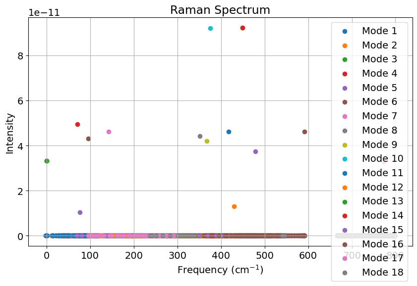
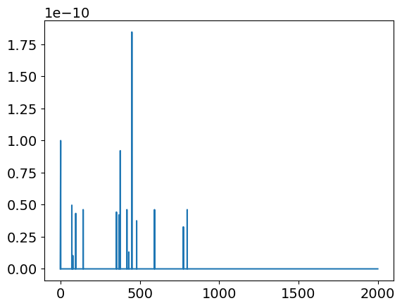
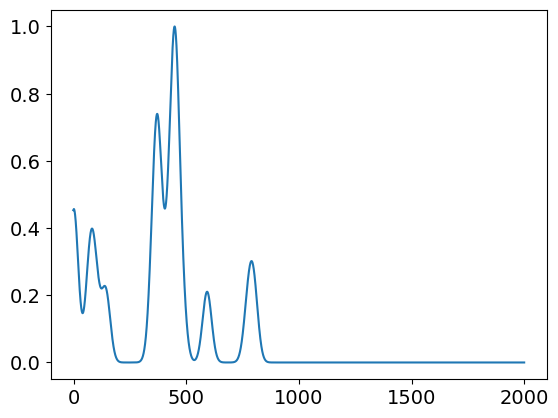

<!DOCTYPE html>


<html lang="en" >

  <head>
    <meta charset="utf-8" />
    <meta name="viewport" content="width=device-width, initial-scale=1.0" /><meta name="generator" content="Docutils 0.18.1: http://docutils.sourceforge.net/" />

    <title>Phonon structure of different solids &#8212; Interactive IR and Raman</title>
  
  
  
  <script data-cfasync="false">
    document.documentElement.dataset.mode = localStorage.getItem("mode") || "";
    document.documentElement.dataset.theme = localStorage.getItem("theme") || "light";
  </script>
  
  <!-- Loaded before other Sphinx assets -->
  <link href="../_static/styles/theme.css?digest=e353d410970836974a52" rel="stylesheet" />
<link href="../_static/styles/bootstrap.css?digest=e353d410970836974a52" rel="stylesheet" />
<link href="../_static/styles/pydata-sphinx-theme.css?digest=e353d410970836974a52" rel="stylesheet" />

  
  <link href="../_static/vendor/fontawesome/6.1.2/css/all.min.css?digest=e353d410970836974a52" rel="stylesheet" />
  <link rel="preload" as="font" type="font/woff2" crossorigin href="../_static/vendor/fontawesome/6.1.2/webfonts/fa-solid-900.woff2" />
<link rel="preload" as="font" type="font/woff2" crossorigin href="../_static/vendor/fontawesome/6.1.2/webfonts/fa-brands-400.woff2" />
<link rel="preload" as="font" type="font/woff2" crossorigin href="../_static/vendor/fontawesome/6.1.2/webfonts/fa-regular-400.woff2" />

    <link rel="stylesheet" type="text/css" href="../_static/pygments.css" />
    <link rel="stylesheet" href="../_static/styles/sphinx-book-theme.css?digest=14f4ca6b54d191a8c7657f6c759bf11a5fb86285" type="text/css" />
    <link rel="stylesheet" type="text/css" href="../_static/togglebutton.css" />
    <link rel="stylesheet" type="text/css" href="../_static/copybutton.css" />
    <link rel="stylesheet" type="text/css" href="../_static/mystnb.4510f1fc1dee50b3e5859aac5469c37c29e427902b24a333a5f9fcb2f0b3ac41.css" />
    <link rel="stylesheet" type="text/css" href="../_static/sphinx-thebe.css" />
    <link rel="stylesheet" type="text/css" href="../_static/design-style.4045f2051d55cab465a707391d5b2007.min.css" />
  
  <!-- Pre-loaded scripts that we'll load fully later -->
  <link rel="preload" as="script" href="../_static/scripts/bootstrap.js?digest=e353d410970836974a52" />
<link rel="preload" as="script" href="../_static/scripts/pydata-sphinx-theme.js?digest=e353d410970836974a52" />

    <script data-url_root="../" id="documentation_options" src="../_static/documentation_options.js"></script>
    <script src="../_static/jquery.js"></script>
    <script src="../_static/underscore.js"></script>
    <script src="../_static/_sphinx_javascript_frameworks_compat.js"></script>
    <script src="../_static/doctools.js"></script>
    <script src="../_static/clipboard.min.js"></script>
    <script src="../_static/copybutton.js"></script>
    <script src="../_static/scripts/sphinx-book-theme.js?digest=5a5c038af52cf7bc1a1ec88eea08e6366ee68824"></script>
    <script>let toggleHintShow = 'Click to show';</script>
    <script>let toggleHintHide = 'Click to hide';</script>
    <script>let toggleOpenOnPrint = 'true';</script>
    <script src="../_static/togglebutton.js"></script>
    <script src="https://cdnjs.cloudflare.com/ajax/libs/require.js/2.3.4/require.min.js"></script>
    <script>var togglebuttonSelector = '.toggle, .admonition.dropdown';</script>
    <script src="../_static/design-tabs.js"></script>
    <script>const THEBE_JS_URL = "https://unpkg.com/thebe@0.8.2/lib/index.js"
const thebe_selector = ".thebe,.cell"
const thebe_selector_input = "pre"
const thebe_selector_output = ".output, .cell_output"
</script>
    <script async="async" src="../_static/sphinx-thebe.js"></script>
    <script>DOCUMENTATION_OPTIONS.pagename = 'Notebooks/page4_phonon-band structure';</script>
    <link rel="index" title="Index" href="../genindex.html" />
    <link rel="search" title="Search" href="../search.html" />
    <link rel="next" title="Auxilair documents" href="page4_Solids_IR-Raman_3D_anim.html" />
    <link rel="prev" title="IR and raman" href="page4_IR-Raman-Phonon-Dispersion.html" />
  <meta name="viewport" content="width=device-width, initial-scale=1"/>
  <meta name="docsearch:language" content="en"/>
  </head>
  
  
  <body data-bs-spy="scroll" data-bs-target=".bd-toc-nav" data-offset="180" data-bs-root-margin="0px 0px -60%" data-default-mode="">

  
  
  <a class="skip-link" href="#main-content">Skip to main content</a>
  
  <input type="checkbox"
          class="sidebar-toggle"
          name="__primary"
          id="__primary"/>
  <label class="overlay overlay-primary" for="__primary"></label>
  
  <input type="checkbox"
          class="sidebar-toggle"
          name="__secondary"
          id="__secondary"/>
  <label class="overlay overlay-secondary" for="__secondary"></label>
  
  <div class="search-button__wrapper">
    <div class="search-button__overlay"></div>
    <div class="search-button__search-container">
<form class="bd-search d-flex align-items-center"
      action="../search.html"
      method="get">
  <i class="fa-solid fa-magnifying-glass"></i>
  <input type="search"
         class="form-control"
         name="q"
         id="search-input"
         placeholder="Search this book..."
         aria-label="Search this book..."
         autocomplete="off"
         autocorrect="off"
         autocapitalize="off"
         spellcheck="false"/>
  <span class="search-button__kbd-shortcut"><kbd class="kbd-shortcut__modifier">Ctrl</kbd>+<kbd>K</kbd></span>
</form></div>
  </div>
  
    <nav class="bd-header navbar navbar-expand-lg bd-navbar">
    </nav>
  
  <div class="bd-container">
    <div class="bd-container__inner bd-page-width">
      
      <div class="bd-sidebar-primary bd-sidebar">
        

  
  <div class="sidebar-header-items sidebar-primary__section">
    
    
    
    
  </div>
  
    <div class="sidebar-primary-items__start sidebar-primary__section">
        <div class="sidebar-primary-item">
  

<a class="navbar-brand logo" href="../inicio.html">
  
  
  
  
    
    
      
    
    
    
    <script>document.write(``);</script>
  
  
</a></div>
        <div class="sidebar-primary-item"><nav class="bd-links" id="bd-docs-nav" aria-label="Main">
    <div class="bd-toc-item navbar-nav active">
        
        <ul class="nav bd-sidenav bd-sidenav__home-link">
            <li class="toctree-l1">
                <a class="reference internal" href="../inicio.html">
                    Welcome
                </a>
            </li>
        </ul>
        <ul class="current nav bd-sidenav">
<li class="toctree-l1"><a class="reference internal" href="Basic_Notebook.html">Jupyter Notebook</a></li>


<li class="toctree-l1"><a class="reference internal" href="page1.html">Vibrational spectroscopy</a></li>


<li class="toctree-l1"><a class="reference internal" href="page1_5.html">Vibrational spectroscopy - Interactive</a></li>


<li class="toctree-l1"><a class="reference internal" href="page2.html">Calculate your own IR and Raman Spectra</a></li>


<li class="toctree-l1"><a class="reference internal" href="page3.html">Harmonic Oscillator - Quantum Mechanics Approach</a></li>


<li class="toctree-l1"><a class="reference internal" href="page3_5.html">Harmonic Oscillator - Quantum Mechanics Approach - Interactive</a></li>
<li class="toctree-l1"><a class="reference internal" href="page4_IR-Raman-Phonon-Dispersion.html">IR and raman</a></li>


<li class="toctree-l1 current active"><a class="current reference internal" href="#">Phonon structure of different solids</a></li>


<li class="toctree-l1"><a class="reference internal" href="page4_Solids_IR-Raman_3D_anim.html">Auxilair documents</a></li>
</ul>

    </div>
</nav></div>
    </div>
  
  
  <div class="sidebar-primary-items__end sidebar-primary__section">
  </div>
  
  <div id="rtd-footer-container"></div>


      </div>
      
      <main id="main-content" class="bd-main">
        
        

<div class="sbt-scroll-pixel-helper"></div>

          <div class="bd-content">
            <div class="bd-article-container">
              
              <div class="bd-header-article">
<div class="header-article-items header-article__inner">
  
    <div class="header-article-items__start">
      
        <div class="header-article-item"><label class="sidebar-toggle primary-toggle btn btn-sm" for="__primary" title="Toggle primary sidebar" data-bs-placement="bottom" data-bs-toggle="tooltip">
  <span class="fa-solid fa-bars"></span>
</label></div>
      
    </div>
  
  
    <div class="header-article-items__end">
      
        <div class="header-article-item">

<div class="article-header-buttons">


<div class="dropdown dropdown-launch-buttons">
  <button class="btn dropdown-toggle" type="button" data-bs-toggle="dropdown" aria-expanded="false" aria-label="Launch interactive content">
    <i class="fas fa-rocket"></i>
  </button>
  <ul class="dropdown-menu">
      
      
      
      <li><a href="https://mybinder.org/v2/gh/AntonioCd96/IR-and-Raman.git/master?urlpath=lab/tree/Notebooks/page4_phonon-band structure.ipynb" target="_blank"
   class="btn btn-sm dropdown-item"
   title="Launch onBinder"
   data-bs-placement="left" data-bs-toggle="tooltip"
>
  

<span class="btn__icon-container">
  
    
  </span>
<span class="btn__text-container">Binder</span>
</a>
</li>
      
      
      
      
      <li><a href="https://noto.epfl.ch/hub/user-redirect/git-pull?repo=https%3A//github.com/AntonioCd96/IR-and-Raman.git&urlpath=lab/tree/IR-and-Raman.git/Notebooks/page4_phonon-band+structure.ipynb&branch=master" target="_blank"
   class="btn btn-sm dropdown-item"
   title="Launch onJupyterHub"
   data-bs-placement="left" data-bs-toggle="tooltip"
>
  

<span class="btn__icon-container">
  
    
  </span>
<span class="btn__text-container">JupyterHub</span>
</a>
</li>
      
      
      
      
      <li><a href="https://colab.research.google.com/github/AntonioCd96/IR-and-Raman.git/blob/master/Notebooks/page4_phonon-band structure.ipynb" target="_blank"
   class="btn btn-sm dropdown-item"
   title="Launch onColab"
   data-bs-placement="left" data-bs-toggle="tooltip"
>
  

<span class="btn__icon-container">
  
    
  </span>
<span class="btn__text-container">Colab</span>
</a>
</li>
      
      
      
      
      <li>
<button onclick="initThebeSBT()"
  class="btn btn-sm btn-launch-thebe dropdown-item"
  title="Launch Thebe"
  data-bs-placement="left" data-bs-toggle="tooltip"
>
  

<span class="btn__icon-container">
  <i class="fas fa-play"></i>
  </span>
<span class="btn__text-container">Live Code</span>
</button>
</li>
      
  </ul>
</div>


<div class="dropdown dropdown-source-buttons">
  <button class="btn dropdown-toggle" type="button" data-bs-toggle="dropdown" aria-expanded="false" aria-label="Source repositories">
    <i class="fab fa-github"></i>
  </button>
  <ul class="dropdown-menu">
      
      
      
      <li><a href="https://github.com/AntonioCd96/IR-and-Raman.git" target="_blank"
   class="btn btn-sm btn-source-repository-button dropdown-item"
   title="Source repository"
   data-bs-placement="left" data-bs-toggle="tooltip"
>
  

<span class="btn__icon-container">
  <i class="fab fa-github"></i>
  </span>
<span class="btn__text-container">Repository</span>
</a>
</li>
      
      
      
      
      <li><a href="https://github.com/AntonioCd96/IR-and-Raman.git/issues/new?title=Issue%20on%20page%20%2FNotebooks/page4_phonon-band structure.html&body=Your%20issue%20content%20here." target="_blank"
   class="btn btn-sm btn-source-issues-button dropdown-item"
   title="Open an issue"
   data-bs-placement="left" data-bs-toggle="tooltip"
>
  

<span class="btn__icon-container">
  <i class="fas fa-lightbulb"></i>
  </span>
<span class="btn__text-container">Open issue</span>
</a>
</li>
      
  </ul>
</div>


<div class="dropdown dropdown-download-buttons">
  <button class="btn dropdown-toggle" type="button" data-bs-toggle="dropdown" aria-expanded="false" aria-label="Download this page">
    <i class="fas fa-download"></i>
  </button>
  <ul class="dropdown-menu">
      
      
      
      <li><a href="../_sources/Notebooks/page4_phonon-band structure.ipynb" target="_blank"
   class="btn btn-sm btn-download-source-button dropdown-item"
   title="Download source file"
   data-bs-placement="left" data-bs-toggle="tooltip"
>
  

<span class="btn__icon-container">
  <i class="fas fa-file"></i>
  </span>
<span class="btn__text-container">.ipynb</span>
</a>
</li>
      
      
      
      
      <li>
<button onclick="window.print()"
  class="btn btn-sm btn-download-pdf-button dropdown-item"
  title="Print to PDF"
  data-bs-placement="left" data-bs-toggle="tooltip"
>
  

<span class="btn__icon-container">
  <i class="fas fa-file-pdf"></i>
  </span>
<span class="btn__text-container">.pdf</span>
</button>
</li>
      
  </ul>
</div>


<button onclick="toggleFullScreen()"
  class="btn btn-sm btn-fullscreen-button"
  title="Fullscreen mode"
  data-bs-placement="bottom" data-bs-toggle="tooltip"
>
  

<span class="btn__icon-container">
  <i class="fas fa-expand"></i>
  </span>

</button>


<script>
document.write(`
  <button class="theme-switch-button btn btn-sm btn-outline-primary navbar-btn rounded-circle" title="light/dark" aria-label="light/dark" data-bs-placement="bottom" data-bs-toggle="tooltip">
    <span class="theme-switch" data-mode="light"><i class="fa-solid fa-sun"></i></span>
    <span class="theme-switch" data-mode="dark"><i class="fa-solid fa-moon"></i></span>
    <span class="theme-switch" data-mode="auto"><i class="fa-solid fa-circle-half-stroke"></i></span>
  </button>
`);
</script>

<script>
document.write(`
  <button class="btn btn-sm navbar-btn search-button search-button__button" title="Search" aria-label="Search" data-bs-placement="bottom" data-bs-toggle="tooltip">
    <i class="fa-solid fa-magnifying-glass"></i>
  </button>
`);
</script>
<label class="sidebar-toggle secondary-toggle btn btn-sm" for="__secondary"title="Toggle secondary sidebar" data-bs-placement="bottom" data-bs-toggle="tooltip">
    <span class="fa-solid fa-list"></span>
</label>
</div></div>
      
    </div>
  
</div>
</div>
              
              

<div id="jb-print-docs-body" class="onlyprint">
    <h1>Phonon structure of different solids</h1>
    <!-- Table of contents -->
    <div id="print-main-content">
        <div id="jb-print-toc">
            
            <div>
                <h2> Contents </h2>
            </div>
            <nav aria-label="Page">
                <ul class="visible nav section-nav flex-column">
<li class="toc-h1 nav-item toc-entry"><a class="reference internal nav-link" href="#">Phonon structure of different solids</a></li>
<li class="toc-h1 nav-item toc-entry"><a class="reference internal nav-link" href="#play-with-1507-compounds">Play with 1507 compounds</a></li>
<li class="toc-h1 nav-item toc-entry"><a class="reference internal nav-link" href="#ir-and-raman">IR and raman</a></li>
</ul>

            </nav>
        </div>
    </div>
</div>

              
                
<div id="searchbox"></div>
                <article class="bd-article" role="main">
                  
  <section class="tex2jax_ignore mathjax_ignore" id="phonon-structure-of-different-solids">
<h1>Phonon structure of different solids<a class="headerlink" href="#phonon-structure-of-different-solids" title="Permalink to this heading">#</a></h1>
<div class="cell docutils container">
<div class="cell_input docutils container">
<div class="highlight-ipython3 notranslate"><div class="highlight"><pre><span></span><span class="o">!</span>pip<span class="w"> </span>install<span class="w"> </span>mp-api
<span class="o">!</span>pip<span class="w"> </span>install<span class="w"> </span>mpcontribs-client
<span class="o">!</span>pip<span class="w"> </span>install<span class="w"> </span>crystal-toolkit<span class="w"> </span>--upgrade
<span class="o">!</span>pip<span class="w"> </span>install<span class="w"> </span>dash
</pre></div>
</div>
</div>
<div class="cell_output docutils container">
<div class="output stream highlight-myst-ansi notranslate"><div class="highlight"><pre><span></span>Requirement already satisfied: mp-api in /home/cd96/psi4conda/envs/jbook/lib/python3.11/site-packages (0.40.0)
</pre></div>
</div>
<div class="output stream highlight-myst-ansi notranslate"><div class="highlight"><pre><span></span>Requirement already satisfied: setuptools in /home/cd96/psi4conda/envs/jbook/lib/python3.11/site-packages (from mp-api) (67.7.2)
Requirement already satisfied: msgpack in /home/cd96/psi4conda/envs/jbook/lib/python3.11/site-packages (from mp-api) (1.0.7)
Requirement already satisfied: maggma&gt;=0.57.1 in /home/cd96/psi4conda/envs/jbook/lib/python3.11/site-packages (from mp-api) (0.63.1)
Requirement already satisfied: pymatgen&gt;=2022.3.7 in /home/cd96/psi4conda/envs/jbook/lib/python3.11/site-packages (from mp-api) (2024.2.8)
Requirement already satisfied: typing-extensions&gt;=3.7.4.1 in /home/cd96/psi4conda/envs/jbook/lib/python3.11/site-packages (from mp-api) (4.9.0)
Requirement already satisfied: requests&gt;=2.23.0 in /home/cd96/psi4conda/envs/jbook/lib/python3.11/site-packages (from mp-api) (2.29.0)
</pre></div>
</div>
<div class="output stream highlight-myst-ansi notranslate"><div class="highlight"><pre><span></span>Requirement already satisfied: monty&gt;=2023.9.25 in /home/cd96/psi4conda/envs/jbook/lib/python3.11/site-packages (from mp-api) (2024.2.2)
Requirement already satisfied: emmet-core&gt;=0.78.0rc3 in /home/cd96/psi4conda/envs/jbook/lib/python3.11/site-packages (from mp-api) (0.78.0rc3)
</pre></div>
</div>
<div class="output stream highlight-myst-ansi notranslate"><div class="highlight"><pre><span></span>Requirement already satisfied: pydantic&gt;=2.0 in /home/cd96/psi4conda/envs/jbook/lib/python3.11/site-packages (from emmet-core&gt;=0.78.0rc3-&gt;mp-api) (2.6.1)
Requirement already satisfied: pydantic-settings&gt;=2.0 in /home/cd96/psi4conda/envs/jbook/lib/python3.11/site-packages (from emmet-core&gt;=0.78.0rc3-&gt;mp-api) (2.1.0)
Requirement already satisfied: pybtex~=0.24 in /home/cd96/psi4conda/envs/jbook/lib/python3.11/site-packages (from emmet-core&gt;=0.78.0rc3-&gt;mp-api) (0.24.0)
</pre></div>
</div>
<div class="output stream highlight-myst-ansi notranslate"><div class="highlight"><pre><span></span>Requirement already satisfied: ruamel.yaml&lt;0.18 in /home/cd96/psi4conda/envs/jbook/lib/python3.11/site-packages (from maggma&gt;=0.57.1-&gt;mp-api) (0.17.40)
Requirement already satisfied: pymongo&gt;=4.2.0 in /home/cd96/psi4conda/envs/jbook/lib/python3.11/site-packages (from maggma&gt;=0.57.1-&gt;mp-api) (4.6.1)
Requirement already satisfied: mongomock&gt;=3.10.0 in /home/cd96/psi4conda/envs/jbook/lib/python3.11/site-packages (from maggma&gt;=0.57.1-&gt;mp-api) (4.1.2)
Requirement already satisfied: pydash&gt;=4.1.0 in /home/cd96/psi4conda/envs/jbook/lib/python3.11/site-packages (from maggma&gt;=0.57.1-&gt;mp-api) (7.0.7)
Requirement already satisfied: jsonschema&gt;=3.1.1 in /home/cd96/psi4conda/envs/jbook/lib/python3.11/site-packages (from maggma&gt;=0.57.1-&gt;mp-api) (4.17.3)
Requirement already satisfied: tqdm&gt;=4.19.6 in /home/cd96/psi4conda/envs/jbook/lib/python3.11/site-packages (from maggma&gt;=0.57.1-&gt;mp-api) (4.66.2)
Requirement already satisfied: mongogrant&gt;=0.3.1 in /home/cd96/psi4conda/envs/jbook/lib/python3.11/site-packages (from maggma&gt;=0.57.1-&gt;mp-api) (0.3.3)
Requirement already satisfied: aioitertools&gt;=0.5.1 in /home/cd96/psi4conda/envs/jbook/lib/python3.11/site-packages (from maggma&gt;=0.57.1-&gt;mp-api) (0.11.0)
Requirement already satisfied: numpy&gt;=1.17.3 in /home/cd96/psi4conda/envs/jbook/lib/python3.11/site-packages (from maggma&gt;=0.57.1-&gt;mp-api) (1.25.2)
</pre></div>
</div>
<div class="output stream highlight-myst-ansi notranslate"><div class="highlight"><pre><span></span>Requirement already satisfied: fastapi&gt;=0.42.0 in /home/cd96/psi4conda/envs/jbook/lib/python3.11/site-packages (from maggma&gt;=0.57.1-&gt;mp-api) (0.109.2)
Requirement already satisfied: pyzmq&gt;=24.0.1 in /home/cd96/psi4conda/envs/jbook/lib/python3.11/site-packages (from maggma&gt;=0.57.1-&gt;mp-api) (25.0.2)
Requirement already satisfied: dnspython&gt;=1.16.0 in /home/cd96/psi4conda/envs/jbook/lib/python3.11/site-packages (from maggma&gt;=0.57.1-&gt;mp-api) (2.5.0)
Requirement already satisfied: sshtunnel&gt;=0.1.5 in /home/cd96/psi4conda/envs/jbook/lib/python3.11/site-packages (from maggma&gt;=0.57.1-&gt;mp-api) (0.4.0)
Requirement already satisfied: orjson&gt;=3.9.0 in /home/cd96/psi4conda/envs/jbook/lib/python3.11/site-packages (from maggma&gt;=0.57.1-&gt;mp-api) (3.9.14)
Requirement already satisfied: boto3&gt;=1.20.41 in /home/cd96/psi4conda/envs/jbook/lib/python3.11/site-packages (from maggma&gt;=0.57.1-&gt;mp-api) (1.34.43)
Requirement already satisfied: python-dateutil&gt;=2.8.2 in /home/cd96/psi4conda/envs/jbook/lib/python3.11/site-packages (from maggma&gt;=0.57.1-&gt;mp-api) (2.8.2)
Requirement already satisfied: uvicorn&gt;=0.18.3 in /home/cd96/psi4conda/envs/jbook/lib/python3.11/site-packages (from maggma&gt;=0.57.1-&gt;mp-api) (0.27.1)
</pre></div>
</div>
<div class="output stream highlight-myst-ansi notranslate"><div class="highlight"><pre><span></span>Requirement already satisfied: matplotlib&gt;=1.5 in /home/cd96/psi4conda/envs/jbook/lib/python3.11/site-packages (from pymatgen&gt;=2022.3.7-&gt;mp-api) (3.7.1)
Requirement already satisfied: networkx&gt;=2.2 in /home/cd96/psi4conda/envs/jbook/lib/python3.11/site-packages (from pymatgen&gt;=2022.3.7-&gt;mp-api) (3.2.1)
Requirement already satisfied: palettable&gt;=3.1.1 in /home/cd96/psi4conda/envs/jbook/lib/python3.11/site-packages (from pymatgen&gt;=2022.3.7-&gt;mp-api) (3.3.3)
Requirement already satisfied: pandas in /home/cd96/psi4conda/envs/jbook/lib/python3.11/site-packages (from pymatgen&gt;=2022.3.7-&gt;mp-api) (2.0.1)
Requirement already satisfied: plotly&gt;=4.5.0 in /home/cd96/psi4conda/envs/jbook/lib/python3.11/site-packages (from pymatgen&gt;=2022.3.7-&gt;mp-api) (5.14.1)
Requirement already satisfied: scipy&gt;=1.5.0 in /home/cd96/psi4conda/envs/jbook/lib/python3.11/site-packages (from pymatgen&gt;=2022.3.7-&gt;mp-api) (1.9.2)
Requirement already satisfied: spglib&gt;=2.0.2 in /home/cd96/psi4conda/envs/jbook/lib/python3.11/site-packages (from pymatgen&gt;=2022.3.7-&gt;mp-api) (2.3.1)
Requirement already satisfied: sympy in /home/cd96/psi4conda/envs/jbook/lib/python3.11/site-packages (from pymatgen&gt;=2022.3.7-&gt;mp-api) (1.12)
</pre></div>
</div>
<div class="output stream highlight-myst-ansi notranslate"><div class="highlight"><pre><span></span>Requirement already satisfied: tabulate in /home/cd96/psi4conda/envs/jbook/lib/python3.11/site-packages (from pymatgen&gt;=2022.3.7-&gt;mp-api) (0.9.0)
Requirement already satisfied: uncertainties&gt;=3.1.4 in /home/cd96/psi4conda/envs/jbook/lib/python3.11/site-packages (from pymatgen&gt;=2022.3.7-&gt;mp-api) (3.1.7)
Requirement already satisfied: joblib in /home/cd96/psi4conda/envs/jbook/lib/python3.11/site-packages (from pymatgen&gt;=2022.3.7-&gt;mp-api) (1.3.2)
Requirement already satisfied: charset-normalizer&lt;4,&gt;=2 in /home/cd96/psi4conda/envs/jbook/lib/python3.11/site-packages (from requests&gt;=2.23.0-&gt;mp-api) (3.1.0)
Requirement already satisfied: idna&lt;4,&gt;=2.5 in /home/cd96/psi4conda/envs/jbook/lib/python3.11/site-packages (from requests&gt;=2.23.0-&gt;mp-api) (3.4)
Requirement already satisfied: urllib3&lt;1.27,&gt;=1.21.1 in /home/cd96/psi4conda/envs/jbook/lib/python3.11/site-packages (from requests&gt;=2.23.0-&gt;mp-api) (1.26.15)
Requirement already satisfied: certifi&gt;=2017.4.17 in /home/cd96/psi4conda/envs/jbook/lib/python3.11/site-packages (from requests&gt;=2.23.0-&gt;mp-api) (2023.7.22)
</pre></div>
</div>
<div class="output stream highlight-myst-ansi notranslate"><div class="highlight"><pre><span></span>Requirement already satisfied: botocore&lt;1.35.0,&gt;=1.34.43 in /home/cd96/psi4conda/envs/jbook/lib/python3.11/site-packages (from boto3&gt;=1.20.41-&gt;maggma&gt;=0.57.1-&gt;mp-api) (1.34.43)
Requirement already satisfied: jmespath&lt;2.0.0,&gt;=0.7.1 in /home/cd96/psi4conda/envs/jbook/lib/python3.11/site-packages (from boto3&gt;=1.20.41-&gt;maggma&gt;=0.57.1-&gt;mp-api) (1.0.1)
</pre></div>
</div>
<div class="output stream highlight-myst-ansi notranslate"><div class="highlight"><pre><span></span>Requirement already satisfied: s3transfer&lt;0.11.0,&gt;=0.10.0 in /home/cd96/psi4conda/envs/jbook/lib/python3.11/site-packages (from boto3&gt;=1.20.41-&gt;maggma&gt;=0.57.1-&gt;mp-api) (0.10.0)
</pre></div>
</div>
<div class="output stream highlight-myst-ansi notranslate"><div class="highlight"><pre><span></span>Requirement already satisfied: starlette&lt;0.37.0,&gt;=0.36.3 in /home/cd96/psi4conda/envs/jbook/lib/python3.11/site-packages (from fastapi&gt;=0.42.0-&gt;maggma&gt;=0.57.1-&gt;mp-api) (0.36.3)
</pre></div>
</div>
<div class="output stream highlight-myst-ansi notranslate"><div class="highlight"><pre><span></span>Requirement already satisfied: attrs&gt;=17.4.0 in /home/cd96/psi4conda/envs/jbook/lib/python3.11/site-packages (from jsonschema&gt;=3.1.1-&gt;maggma&gt;=0.57.1-&gt;mp-api) (23.1.0)
Requirement already satisfied: pyrsistent!=0.17.0,!=0.17.1,!=0.17.2,&gt;=0.14.0 in /home/cd96/psi4conda/envs/jbook/lib/python3.11/site-packages (from jsonschema&gt;=3.1.1-&gt;maggma&gt;=0.57.1-&gt;mp-api) (0.19.3)
Requirement already satisfied: contourpy&gt;=1.0.1 in /home/cd96/psi4conda/envs/jbook/lib/python3.11/site-packages (from matplotlib&gt;=1.5-&gt;pymatgen&gt;=2022.3.7-&gt;mp-api) (1.0.7)
Requirement already satisfied: cycler&gt;=0.10 in /home/cd96/psi4conda/envs/jbook/lib/python3.11/site-packages (from matplotlib&gt;=1.5-&gt;pymatgen&gt;=2022.3.7-&gt;mp-api) (0.11.0)
Requirement already satisfied: fonttools&gt;=4.22.0 in /home/cd96/psi4conda/envs/jbook/lib/python3.11/site-packages (from matplotlib&gt;=1.5-&gt;pymatgen&gt;=2022.3.7-&gt;mp-api) (4.39.4)
Requirement already satisfied: kiwisolver&gt;=1.0.1 in /home/cd96/psi4conda/envs/jbook/lib/python3.11/site-packages (from matplotlib&gt;=1.5-&gt;pymatgen&gt;=2022.3.7-&gt;mp-api) (1.4.4)
Requirement already satisfied: packaging&gt;=20.0 in /home/cd96/psi4conda/envs/jbook/lib/python3.11/site-packages (from matplotlib&gt;=1.5-&gt;pymatgen&gt;=2022.3.7-&gt;mp-api) (23.1)
Requirement already satisfied: pillow&gt;=6.2.0 in /home/cd96/psi4conda/envs/jbook/lib/python3.11/site-packages (from matplotlib&gt;=1.5-&gt;pymatgen&gt;=2022.3.7-&gt;mp-api) (9.5.0)
Requirement already satisfied: pyparsing&gt;=2.3.1 in /home/cd96/psi4conda/envs/jbook/lib/python3.11/site-packages (from matplotlib&gt;=1.5-&gt;pymatgen&gt;=2022.3.7-&gt;mp-api) (3.0.9)
</pre></div>
</div>
<div class="output stream highlight-myst-ansi notranslate"><div class="highlight"><pre><span></span>Requirement already satisfied: Click in /home/cd96/psi4conda/envs/jbook/lib/python3.11/site-packages (from mongogrant&gt;=0.3.1-&gt;maggma&gt;=0.57.1-&gt;mp-api) (8.1.3)
Requirement already satisfied: Flask&gt;=1.0 in /home/cd96/psi4conda/envs/jbook/lib/python3.11/site-packages (from mongogrant&gt;=0.3.1-&gt;maggma&gt;=0.57.1-&gt;mp-api) (3.0.2)
Requirement already satisfied: sentinels in /home/cd96/psi4conda/envs/jbook/lib/python3.11/site-packages (from mongomock&gt;=3.10.0-&gt;maggma&gt;=0.57.1-&gt;mp-api) (1.0.0)
</pre></div>
</div>
<div class="output stream highlight-myst-ansi notranslate"><div class="highlight"><pre><span></span>Requirement already satisfied: tenacity&gt;=6.2.0 in /home/cd96/psi4conda/envs/jbook/lib/python3.11/site-packages (from plotly&gt;=4.5.0-&gt;pymatgen&gt;=2022.3.7-&gt;mp-api) (8.2.2)
</pre></div>
</div>
<div class="output stream highlight-myst-ansi notranslate"><div class="highlight"><pre><span></span>Requirement already satisfied: PyYAML&gt;=3.01 in /home/cd96/psi4conda/envs/jbook/lib/python3.11/site-packages (from pybtex~=0.24-&gt;emmet-core&gt;=0.78.0rc3-&gt;mp-api) (6.0)
Requirement already satisfied: latexcodec&gt;=1.0.4 in /home/cd96/psi4conda/envs/jbook/lib/python3.11/site-packages (from pybtex~=0.24-&gt;emmet-core&gt;=0.78.0rc3-&gt;mp-api) (2.0.1)
Requirement already satisfied: six in /home/cd96/psi4conda/envs/jbook/lib/python3.11/site-packages (from pybtex~=0.24-&gt;emmet-core&gt;=0.78.0rc3-&gt;mp-api) (1.16.0)
</pre></div>
</div>
<div class="output stream highlight-myst-ansi notranslate"><div class="highlight"><pre><span></span>Requirement already satisfied: annotated-types&gt;=0.4.0 in /home/cd96/psi4conda/envs/jbook/lib/python3.11/site-packages (from pydantic&gt;=2.0-&gt;emmet-core&gt;=0.78.0rc3-&gt;mp-api) (0.6.0)
Requirement already satisfied: pydantic-core==2.16.2 in /home/cd96/psi4conda/envs/jbook/lib/python3.11/site-packages (from pydantic&gt;=2.0-&gt;emmet-core&gt;=0.78.0rc3-&gt;mp-api) (2.16.2)
</pre></div>
</div>
<div class="output stream highlight-myst-ansi notranslate"><div class="highlight"><pre><span></span>Requirement already satisfied: python-dotenv&gt;=0.21.0 in /home/cd96/psi4conda/envs/jbook/lib/python3.11/site-packages (from pydantic-settings&gt;=2.0-&gt;emmet-core&gt;=0.78.0rc3-&gt;mp-api) (1.0.1)
</pre></div>
</div>
<div class="output stream highlight-myst-ansi notranslate"><div class="highlight"><pre><span></span>Requirement already satisfied: ruamel.yaml.clib&gt;=0.2.7 in /home/cd96/psi4conda/envs/jbook/lib/python3.11/site-packages (from ruamel.yaml&lt;0.18-&gt;maggma&gt;=0.57.1-&gt;mp-api) (0.2.8)
</pre></div>
</div>
<div class="output stream highlight-myst-ansi notranslate"><div class="highlight"><pre><span></span>Requirement already satisfied: paramiko&gt;=2.7.2 in /home/cd96/psi4conda/envs/jbook/lib/python3.11/site-packages (from sshtunnel&gt;=0.1.5-&gt;maggma&gt;=0.57.1-&gt;mp-api) (3.4.0)
</pre></div>
</div>
<div class="output stream highlight-myst-ansi notranslate"><div class="highlight"><pre><span></span>Requirement already satisfied: future in /home/cd96/psi4conda/envs/jbook/lib/python3.11/site-packages (from uncertainties&gt;=3.1.4-&gt;pymatgen&gt;=2022.3.7-&gt;mp-api) (0.18.3)
</pre></div>
</div>
<div class="output stream highlight-myst-ansi notranslate"><div class="highlight"><pre><span></span>Requirement already satisfied: h11&gt;=0.8 in /home/cd96/psi4conda/envs/jbook/lib/python3.11/site-packages (from uvicorn&gt;=0.18.3-&gt;maggma&gt;=0.57.1-&gt;mp-api) (0.14.0)
</pre></div>
</div>
<div class="output stream highlight-myst-ansi notranslate"><div class="highlight"><pre><span></span>Requirement already satisfied: pytz&gt;=2020.1 in /home/cd96/psi4conda/envs/jbook/lib/python3.11/site-packages (from pandas-&gt;pymatgen&gt;=2022.3.7-&gt;mp-api) (2023.3)
Requirement already satisfied: tzdata&gt;=2022.1 in /home/cd96/psi4conda/envs/jbook/lib/python3.11/site-packages (from pandas-&gt;pymatgen&gt;=2022.3.7-&gt;mp-api) (2023.3)
</pre></div>
</div>
<div class="output stream highlight-myst-ansi notranslate"><div class="highlight"><pre><span></span>Requirement already satisfied: mpmath&gt;=0.19 in /home/cd96/psi4conda/envs/jbook/lib/python3.11/site-packages (from sympy-&gt;pymatgen&gt;=2022.3.7-&gt;mp-api) (1.3.0)
</pre></div>
</div>
<div class="output stream highlight-myst-ansi notranslate"><div class="highlight"><pre><span></span>Requirement already satisfied: Werkzeug&gt;=3.0.0 in /home/cd96/psi4conda/envs/jbook/lib/python3.11/site-packages (from Flask&gt;=1.0-&gt;mongogrant&gt;=0.3.1-&gt;maggma&gt;=0.57.1-&gt;mp-api) (3.0.1)
Requirement already satisfied: Jinja2&gt;=3.1.2 in /home/cd96/psi4conda/envs/jbook/lib/python3.11/site-packages (from Flask&gt;=1.0-&gt;mongogrant&gt;=0.3.1-&gt;maggma&gt;=0.57.1-&gt;mp-api) (3.1.2)
Requirement already satisfied: itsdangerous&gt;=2.1.2 in /home/cd96/psi4conda/envs/jbook/lib/python3.11/site-packages (from Flask&gt;=1.0-&gt;mongogrant&gt;=0.3.1-&gt;maggma&gt;=0.57.1-&gt;mp-api) (2.1.2)
Requirement already satisfied: blinker&gt;=1.6.2 in /home/cd96/psi4conda/envs/jbook/lib/python3.11/site-packages (from Flask&gt;=1.0-&gt;mongogrant&gt;=0.3.1-&gt;maggma&gt;=0.57.1-&gt;mp-api) (1.7.0)
</pre></div>
</div>
<div class="output stream highlight-myst-ansi notranslate"><div class="highlight"><pre><span></span>Requirement already satisfied: bcrypt&gt;=3.2 in /home/cd96/psi4conda/envs/jbook/lib/python3.11/site-packages (from paramiko&gt;=2.7.2-&gt;sshtunnel&gt;=0.1.5-&gt;maggma&gt;=0.57.1-&gt;mp-api) (4.1.2)
</pre></div>
</div>
<div class="output stream highlight-myst-ansi notranslate"><div class="highlight"><pre><span></span>Requirement already satisfied: cryptography&gt;=3.3 in /home/cd96/psi4conda/envs/jbook/lib/python3.11/site-packages (from paramiko&gt;=2.7.2-&gt;sshtunnel&gt;=0.1.5-&gt;maggma&gt;=0.57.1-&gt;mp-api) (40.0.2)
Requirement already satisfied: pynacl&gt;=1.5 in /home/cd96/psi4conda/envs/jbook/lib/python3.11/site-packages (from paramiko&gt;=2.7.2-&gt;sshtunnel&gt;=0.1.5-&gt;maggma&gt;=0.57.1-&gt;mp-api) (1.5.0)
</pre></div>
</div>
<div class="output stream highlight-myst-ansi notranslate"><div class="highlight"><pre><span></span>Requirement already satisfied: anyio&lt;5,&gt;=3.4.0 in /home/cd96/psi4conda/envs/jbook/lib/python3.11/site-packages (from starlette&lt;0.37.0,&gt;=0.36.3-&gt;fastapi&gt;=0.42.0-&gt;maggma&gt;=0.57.1-&gt;mp-api) (3.6.2)
</pre></div>
</div>
<div class="output stream highlight-myst-ansi notranslate"><div class="highlight"><pre><span></span>Requirement already satisfied: sniffio&gt;=1.1 in /home/cd96/psi4conda/envs/jbook/lib/python3.11/site-packages (from anyio&lt;5,&gt;=3.4.0-&gt;starlette&lt;0.37.0,&gt;=0.36.3-&gt;fastapi&gt;=0.42.0-&gt;maggma&gt;=0.57.1-&gt;mp-api) (1.3.0)
</pre></div>
</div>
<div class="output stream highlight-myst-ansi notranslate"><div class="highlight"><pre><span></span>Requirement already satisfied: cffi&gt;=1.12 in /home/cd96/psi4conda/envs/jbook/lib/python3.11/site-packages (from cryptography&gt;=3.3-&gt;paramiko&gt;=2.7.2-&gt;sshtunnel&gt;=0.1.5-&gt;maggma&gt;=0.57.1-&gt;mp-api) (1.15.1)
</pre></div>
</div>
<div class="output stream highlight-myst-ansi notranslate"><div class="highlight"><pre><span></span>Requirement already satisfied: MarkupSafe&gt;=2.0 in /home/cd96/psi4conda/envs/jbook/lib/python3.11/site-packages (from Jinja2&gt;=3.1.2-&gt;Flask&gt;=1.0-&gt;mongogrant&gt;=0.3.1-&gt;maggma&gt;=0.57.1-&gt;mp-api) (2.1.2)
</pre></div>
</div>
<div class="output stream highlight-myst-ansi notranslate"><div class="highlight"><pre><span></span>Requirement already satisfied: pycparser in /home/cd96/psi4conda/envs/jbook/lib/python3.11/site-packages (from cffi&gt;=1.12-&gt;cryptography&gt;=3.3-&gt;paramiko&gt;=2.7.2-&gt;sshtunnel&gt;=0.1.5-&gt;maggma&gt;=0.57.1-&gt;mp-api) (2.21)
</pre></div>
</div>
<div class="output stream highlight-myst-ansi notranslate"><div class="highlight"><pre><span></span>Requirement already satisfied: mpcontribs-client in /home/cd96/psi4conda/envs/jbook/lib/python3.11/site-packages (5.7.0)
Requirement already satisfied: boltons in /home/cd96/psi4conda/envs/jbook/lib/python3.11/site-packages (from mpcontribs-client) (23.1.1)
Requirement already satisfied: bravado in /home/cd96/psi4conda/envs/jbook/lib/python3.11/site-packages (from mpcontribs-client) (11.0.3)
Requirement already satisfied: filetype in /home/cd96/psi4conda/envs/jbook/lib/python3.11/site-packages (from mpcontribs-client) (1.2.0)
Requirement already satisfied: flatten-dict in /home/cd96/psi4conda/envs/jbook/lib/python3.11/site-packages (from mpcontribs-client) (0.4.2)
Requirement already satisfied: ipython in /home/cd96/psi4conda/envs/jbook/lib/python3.11/site-packages (from mpcontribs-client) (8.13.2)
Requirement already satisfied: json2html in /home/cd96/psi4conda/envs/jbook/lib/python3.11/site-packages (from mpcontribs-client) (1.3.0)
Requirement already satisfied: pandas in /home/cd96/psi4conda/envs/jbook/lib/python3.11/site-packages (from mpcontribs-client) (2.0.1)
Requirement already satisfied: pint&lt;0.20 in /home/cd96/psi4conda/envs/jbook/lib/python3.11/site-packages (from mpcontribs-client) (0.19.2)
Requirement already satisfied: plotly in /home/cd96/psi4conda/envs/jbook/lib/python3.11/site-packages (from mpcontribs-client) (5.14.1)
Requirement already satisfied: pyIsEmail in /home/cd96/psi4conda/envs/jbook/lib/python3.11/site-packages (from mpcontribs-client) (2.0.1)
Requirement already satisfied: pymatgen in /home/cd96/psi4conda/envs/jbook/lib/python3.11/site-packages (from mpcontribs-client) (2024.2.8)
Requirement already satisfied: pymongo in /home/cd96/psi4conda/envs/jbook/lib/python3.11/site-packages (from mpcontribs-client) (4.6.1)
Requirement already satisfied: requests-futures in /home/cd96/psi4conda/envs/jbook/lib/python3.11/site-packages (from mpcontribs-client) (1.0.1)
Requirement already satisfied: swagger-spec-validator in /home/cd96/psi4conda/envs/jbook/lib/python3.11/site-packages (from mpcontribs-client) (3.0.3)
Requirement already satisfied: tqdm in /home/cd96/psi4conda/envs/jbook/lib/python3.11/site-packages (from mpcontribs-client) (4.66.2)
Requirement already satisfied: ujson in /home/cd96/psi4conda/envs/jbook/lib/python3.11/site-packages (from mpcontribs-client) (5.9.0)
Requirement already satisfied: semantic-version in /home/cd96/psi4conda/envs/jbook/lib/python3.11/site-packages (from mpcontribs-client) (2.10.0)
Requirement already satisfied: cachetools in /home/cd96/psi4conda/envs/jbook/lib/python3.11/site-packages (from mpcontribs-client) (5.3.2)
</pre></div>
</div>
<div class="output stream highlight-myst-ansi notranslate"><div class="highlight"><pre><span></span>Requirement already satisfied: bravado-core&gt;=5.16.1 in /home/cd96/psi4conda/envs/jbook/lib/python3.11/site-packages (from bravado-&gt;mpcontribs-client) (6.1.1)
Requirement already satisfied: msgpack in /home/cd96/psi4conda/envs/jbook/lib/python3.11/site-packages (from bravado-&gt;mpcontribs-client) (1.0.7)
Requirement already satisfied: python-dateutil in /home/cd96/psi4conda/envs/jbook/lib/python3.11/site-packages (from bravado-&gt;mpcontribs-client) (2.8.2)
Requirement already satisfied: pyyaml in /home/cd96/psi4conda/envs/jbook/lib/python3.11/site-packages (from bravado-&gt;mpcontribs-client) (6.0)
Requirement already satisfied: requests&gt;=2.17 in /home/cd96/psi4conda/envs/jbook/lib/python3.11/site-packages (from bravado-&gt;mpcontribs-client) (2.29.0)
Requirement already satisfied: six in /home/cd96/psi4conda/envs/jbook/lib/python3.11/site-packages (from bravado-&gt;mpcontribs-client) (1.16.0)
Requirement already satisfied: simplejson in /home/cd96/psi4conda/envs/jbook/lib/python3.11/site-packages (from bravado-&gt;mpcontribs-client) (3.19.2)
Requirement already satisfied: monotonic in /home/cd96/psi4conda/envs/jbook/lib/python3.11/site-packages (from bravado-&gt;mpcontribs-client) (1.6)
Requirement already satisfied: typing-extensions in /home/cd96/psi4conda/envs/jbook/lib/python3.11/site-packages (from bravado-&gt;mpcontribs-client) (4.9.0)
</pre></div>
</div>
<div class="output stream highlight-myst-ansi notranslate"><div class="highlight"><pre><span></span>Requirement already satisfied: backcall in /home/cd96/psi4conda/envs/jbook/lib/python3.11/site-packages (from ipython-&gt;mpcontribs-client) (0.2.0)
Requirement already satisfied: decorator in /home/cd96/psi4conda/envs/jbook/lib/python3.11/site-packages (from ipython-&gt;mpcontribs-client) (5.1.1)
Requirement already satisfied: jedi&gt;=0.16 in /home/cd96/psi4conda/envs/jbook/lib/python3.11/site-packages (from ipython-&gt;mpcontribs-client) (0.18.2)
Requirement already satisfied: matplotlib-inline in /home/cd96/psi4conda/envs/jbook/lib/python3.11/site-packages (from ipython-&gt;mpcontribs-client) (0.1.6)
Requirement already satisfied: pickleshare in /home/cd96/psi4conda/envs/jbook/lib/python3.11/site-packages (from ipython-&gt;mpcontribs-client) (0.7.5)
Requirement already satisfied: prompt-toolkit!=3.0.37,&lt;3.1.0,&gt;=3.0.30 in /home/cd96/psi4conda/envs/jbook/lib/python3.11/site-packages (from ipython-&gt;mpcontribs-client) (3.0.38)
Requirement already satisfied: pygments&gt;=2.4.0 in /home/cd96/psi4conda/envs/jbook/lib/python3.11/site-packages (from ipython-&gt;mpcontribs-client) (2.15.1)
Requirement already satisfied: stack-data in /home/cd96/psi4conda/envs/jbook/lib/python3.11/site-packages (from ipython-&gt;mpcontribs-client) (0.6.2)
Requirement already satisfied: traitlets&gt;=5 in /home/cd96/psi4conda/envs/jbook/lib/python3.11/site-packages (from ipython-&gt;mpcontribs-client) (5.9.0)
Requirement already satisfied: pexpect&gt;4.3 in /home/cd96/psi4conda/envs/jbook/lib/python3.11/site-packages (from ipython-&gt;mpcontribs-client) (4.8.0)
</pre></div>
</div>
<div class="output stream highlight-myst-ansi notranslate"><div class="highlight"><pre><span></span>Requirement already satisfied: pytz&gt;=2020.1 in /home/cd96/psi4conda/envs/jbook/lib/python3.11/site-packages (from pandas-&gt;mpcontribs-client) (2023.3)
Requirement already satisfied: tzdata&gt;=2022.1 in /home/cd96/psi4conda/envs/jbook/lib/python3.11/site-packages (from pandas-&gt;mpcontribs-client) (2023.3)
Requirement already satisfied: numpy&gt;=1.21.0 in /home/cd96/psi4conda/envs/jbook/lib/python3.11/site-packages (from pandas-&gt;mpcontribs-client) (1.25.2)
Requirement already satisfied: tenacity&gt;=6.2.0 in /home/cd96/psi4conda/envs/jbook/lib/python3.11/site-packages (from plotly-&gt;mpcontribs-client) (8.2.2)
Requirement already satisfied: packaging in /home/cd96/psi4conda/envs/jbook/lib/python3.11/site-packages (from plotly-&gt;mpcontribs-client) (23.1)
Requirement already satisfied: dnspython&gt;=2.0.0 in /home/cd96/psi4conda/envs/jbook/lib/python3.11/site-packages (from pyIsEmail-&gt;mpcontribs-client) (2.5.0)
</pre></div>
</div>
<div class="output stream highlight-myst-ansi notranslate"><div class="highlight"><pre><span></span>Requirement already satisfied: matplotlib&gt;=1.5 in /home/cd96/psi4conda/envs/jbook/lib/python3.11/site-packages (from pymatgen-&gt;mpcontribs-client) (3.7.1)
Requirement already satisfied: monty&gt;=2024.2.2 in /home/cd96/psi4conda/envs/jbook/lib/python3.11/site-packages (from pymatgen-&gt;mpcontribs-client) (2024.2.2)
Requirement already satisfied: networkx&gt;=2.2 in /home/cd96/psi4conda/envs/jbook/lib/python3.11/site-packages (from pymatgen-&gt;mpcontribs-client) (3.2.1)
Requirement already satisfied: palettable&gt;=3.1.1 in /home/cd96/psi4conda/envs/jbook/lib/python3.11/site-packages (from pymatgen-&gt;mpcontribs-client) (3.3.3)
Requirement already satisfied: pybtex in /home/cd96/psi4conda/envs/jbook/lib/python3.11/site-packages (from pymatgen-&gt;mpcontribs-client) (0.24.0)
Requirement already satisfied: ruamel.yaml&gt;=0.17.0 in /home/cd96/psi4conda/envs/jbook/lib/python3.11/site-packages (from pymatgen-&gt;mpcontribs-client) (0.17.40)
Requirement already satisfied: scipy&gt;=1.5.0 in /home/cd96/psi4conda/envs/jbook/lib/python3.11/site-packages (from pymatgen-&gt;mpcontribs-client) (1.9.2)
Requirement already satisfied: spglib&gt;=2.0.2 in /home/cd96/psi4conda/envs/jbook/lib/python3.11/site-packages (from pymatgen-&gt;mpcontribs-client) (2.3.1)
Requirement already satisfied: sympy in /home/cd96/psi4conda/envs/jbook/lib/python3.11/site-packages (from pymatgen-&gt;mpcontribs-client) (1.12)
Requirement already satisfied: tabulate in /home/cd96/psi4conda/envs/jbook/lib/python3.11/site-packages (from pymatgen-&gt;mpcontribs-client) (0.9.0)
Requirement already satisfied: uncertainties&gt;=3.1.4 in /home/cd96/psi4conda/envs/jbook/lib/python3.11/site-packages (from pymatgen-&gt;mpcontribs-client) (3.1.7)
Requirement already satisfied: joblib in /home/cd96/psi4conda/envs/jbook/lib/python3.11/site-packages (from pymatgen-&gt;mpcontribs-client) (1.3.2)
</pre></div>
</div>
<div class="output stream highlight-myst-ansi notranslate"><div class="highlight"><pre><span></span>Requirement already satisfied: jsonschema in /home/cd96/psi4conda/envs/jbook/lib/python3.11/site-packages (from swagger-spec-validator-&gt;mpcontribs-client) (4.17.3)
</pre></div>
</div>
<div class="output stream highlight-myst-ansi notranslate"><div class="highlight"><pre><span></span>Requirement already satisfied: jsonref in /home/cd96/psi4conda/envs/jbook/lib/python3.11/site-packages (from bravado-core&gt;=5.16.1-&gt;bravado-&gt;mpcontribs-client) (1.1.0)
</pre></div>
</div>
<div class="output stream highlight-myst-ansi notranslate"><div class="highlight"><pre><span></span>Requirement already satisfied: parso&lt;0.9.0,&gt;=0.8.0 in /home/cd96/psi4conda/envs/jbook/lib/python3.11/site-packages (from jedi&gt;=0.16-&gt;ipython-&gt;mpcontribs-client) (0.8.3)
</pre></div>
</div>
<div class="output stream highlight-myst-ansi notranslate"><div class="highlight"><pre><span></span>Requirement already satisfied: contourpy&gt;=1.0.1 in /home/cd96/psi4conda/envs/jbook/lib/python3.11/site-packages (from matplotlib&gt;=1.5-&gt;pymatgen-&gt;mpcontribs-client) (1.0.7)
Requirement already satisfied: cycler&gt;=0.10 in /home/cd96/psi4conda/envs/jbook/lib/python3.11/site-packages (from matplotlib&gt;=1.5-&gt;pymatgen-&gt;mpcontribs-client) (0.11.0)
Requirement already satisfied: fonttools&gt;=4.22.0 in /home/cd96/psi4conda/envs/jbook/lib/python3.11/site-packages (from matplotlib&gt;=1.5-&gt;pymatgen-&gt;mpcontribs-client) (4.39.4)
Requirement already satisfied: kiwisolver&gt;=1.0.1 in /home/cd96/psi4conda/envs/jbook/lib/python3.11/site-packages (from matplotlib&gt;=1.5-&gt;pymatgen-&gt;mpcontribs-client) (1.4.4)
Requirement already satisfied: pillow&gt;=6.2.0 in /home/cd96/psi4conda/envs/jbook/lib/python3.11/site-packages (from matplotlib&gt;=1.5-&gt;pymatgen-&gt;mpcontribs-client) (9.5.0)
Requirement already satisfied: pyparsing&gt;=2.3.1 in /home/cd96/psi4conda/envs/jbook/lib/python3.11/site-packages (from matplotlib&gt;=1.5-&gt;pymatgen-&gt;mpcontribs-client) (3.0.9)
</pre></div>
</div>
<div class="output stream highlight-myst-ansi notranslate"><div class="highlight"><pre><span></span>Requirement already satisfied: ptyprocess&gt;=0.5 in /home/cd96/psi4conda/envs/jbook/lib/python3.11/site-packages (from pexpect&gt;4.3-&gt;ipython-&gt;mpcontribs-client) (0.7.0)
Requirement already satisfied: wcwidth in /home/cd96/psi4conda/envs/jbook/lib/python3.11/site-packages (from prompt-toolkit!=3.0.37,&lt;3.1.0,&gt;=3.0.30-&gt;ipython-&gt;mpcontribs-client) (0.2.6)
</pre></div>
</div>
<div class="output stream highlight-myst-ansi notranslate"><div class="highlight"><pre><span></span>Requirement already satisfied: charset-normalizer&lt;4,&gt;=2 in /home/cd96/psi4conda/envs/jbook/lib/python3.11/site-packages (from requests&gt;=2.17-&gt;bravado-&gt;mpcontribs-client) (3.1.0)
Requirement already satisfied: idna&lt;4,&gt;=2.5 in /home/cd96/psi4conda/envs/jbook/lib/python3.11/site-packages (from requests&gt;=2.17-&gt;bravado-&gt;mpcontribs-client) (3.4)
Requirement already satisfied: urllib3&lt;1.27,&gt;=1.21.1 in /home/cd96/psi4conda/envs/jbook/lib/python3.11/site-packages (from requests&gt;=2.17-&gt;bravado-&gt;mpcontribs-client) (1.26.15)
Requirement already satisfied: certifi&gt;=2017.4.17 in /home/cd96/psi4conda/envs/jbook/lib/python3.11/site-packages (from requests&gt;=2.17-&gt;bravado-&gt;mpcontribs-client) (2023.7.22)
Requirement already satisfied: ruamel.yaml.clib&gt;=0.2.7 in /home/cd96/psi4conda/envs/jbook/lib/python3.11/site-packages (from ruamel.yaml&gt;=0.17.0-&gt;pymatgen-&gt;mpcontribs-client) (0.2.8)
</pre></div>
</div>
<div class="output stream highlight-myst-ansi notranslate"><div class="highlight"><pre><span></span>Requirement already satisfied: future in /home/cd96/psi4conda/envs/jbook/lib/python3.11/site-packages (from uncertainties&gt;=3.1.4-&gt;pymatgen-&gt;mpcontribs-client) (0.18.3)
</pre></div>
</div>
<div class="output stream highlight-myst-ansi notranslate"><div class="highlight"><pre><span></span>Requirement already satisfied: attrs&gt;=17.4.0 in /home/cd96/psi4conda/envs/jbook/lib/python3.11/site-packages (from jsonschema-&gt;swagger-spec-validator-&gt;mpcontribs-client) (23.1.0)
Requirement already satisfied: pyrsistent!=0.17.0,!=0.17.1,!=0.17.2,&gt;=0.14.0 in /home/cd96/psi4conda/envs/jbook/lib/python3.11/site-packages (from jsonschema-&gt;swagger-spec-validator-&gt;mpcontribs-client) (0.19.3)
</pre></div>
</div>
<div class="output stream highlight-myst-ansi notranslate"><div class="highlight"><pre><span></span>Requirement already satisfied: latexcodec&gt;=1.0.4 in /home/cd96/psi4conda/envs/jbook/lib/python3.11/site-packages (from pybtex-&gt;pymatgen-&gt;mpcontribs-client) (2.0.1)
</pre></div>
</div>
<div class="output stream highlight-myst-ansi notranslate"><div class="highlight"><pre><span></span>Requirement already satisfied: executing&gt;=1.2.0 in /home/cd96/psi4conda/envs/jbook/lib/python3.11/site-packages (from stack-data-&gt;ipython-&gt;mpcontribs-client) (1.2.0)
Requirement already satisfied: asttokens&gt;=2.1.0 in /home/cd96/psi4conda/envs/jbook/lib/python3.11/site-packages (from stack-data-&gt;ipython-&gt;mpcontribs-client) (2.2.1)
Requirement already satisfied: pure-eval in /home/cd96/psi4conda/envs/jbook/lib/python3.11/site-packages (from stack-data-&gt;ipython-&gt;mpcontribs-client) (0.2.2)
</pre></div>
</div>
<div class="output stream highlight-myst-ansi notranslate"><div class="highlight"><pre><span></span>Requirement already satisfied: mpmath&gt;=0.19 in /home/cd96/psi4conda/envs/jbook/lib/python3.11/site-packages (from sympy-&gt;pymatgen-&gt;mpcontribs-client) (1.3.0)
</pre></div>
</div>
<div class="output stream highlight-myst-ansi notranslate"><div class="highlight"><pre><span></span>Requirement already satisfied: fqdn in /home/cd96/psi4conda/envs/jbook/lib/python3.11/site-packages (from jsonschema-&gt;swagger-spec-validator-&gt;mpcontribs-client) (1.5.1)
Requirement already satisfied: isoduration in /home/cd96/psi4conda/envs/jbook/lib/python3.11/site-packages (from jsonschema-&gt;swagger-spec-validator-&gt;mpcontribs-client) (20.11.0)
</pre></div>
</div>
<div class="output stream highlight-myst-ansi notranslate"><div class="highlight"><pre><span></span>Requirement already satisfied: jsonpointer&gt;1.13 in /home/cd96/psi4conda/envs/jbook/lib/python3.11/site-packages (from jsonschema-&gt;swagger-spec-validator-&gt;mpcontribs-client) (2.3)
Requirement already satisfied: rfc3339-validator in /home/cd96/psi4conda/envs/jbook/lib/python3.11/site-packages (from jsonschema-&gt;swagger-spec-validator-&gt;mpcontribs-client) (0.1.4)
Requirement already satisfied: rfc3986-validator&gt;0.1.0 in /home/cd96/psi4conda/envs/jbook/lib/python3.11/site-packages (from jsonschema-&gt;swagger-spec-validator-&gt;mpcontribs-client) (0.1.1)
Requirement already satisfied: uri-template in /home/cd96/psi4conda/envs/jbook/lib/python3.11/site-packages (from jsonschema-&gt;swagger-spec-validator-&gt;mpcontribs-client) (1.2.0)
Requirement already satisfied: webcolors&gt;=1.11 in /home/cd96/psi4conda/envs/jbook/lib/python3.11/site-packages (from jsonschema-&gt;swagger-spec-validator-&gt;mpcontribs-client) (1.13)
</pre></div>
</div>
<div class="output stream highlight-myst-ansi notranslate"><div class="highlight"><pre><span></span>Requirement already satisfied: arrow&gt;=0.15.0 in /home/cd96/psi4conda/envs/jbook/lib/python3.11/site-packages (from isoduration-&gt;jsonschema-&gt;swagger-spec-validator-&gt;mpcontribs-client) (1.2.3)
</pre></div>
</div>
<div class="output stream highlight-myst-ansi notranslate"><div class="highlight"><pre><span></span>Collecting crystal-toolkit
</pre></div>
</div>
<div class="output stream highlight-myst-ansi notranslate"><div class="highlight"><pre><span></span>  Using cached crystal_toolkit-2023.11.3-py3-none-any.whl (15.9 MB)
</pre></div>
</div>
<div class="output stream highlight-myst-ansi notranslate"><div class="highlight"><pre><span></span>Collecting crystaltoolkit-extension (from crystal-toolkit)
  Using cached crystaltoolkit-extension-0.6.0.tar.gz (2.9 MB)
</pre></div>
</div>
<div class="output stream highlight-myst-ansi notranslate"><div class="highlight"><pre><span></span>  Installing build dependencies ... ?25l-
</pre></div>
</div>
<div class="output stream highlight-myst-ansi notranslate"><div class="highlight"><pre><span></span> \
</pre></div>
</div>
<div class="output stream highlight-myst-ansi notranslate"><div class="highlight"><pre><span></span> |
</pre></div>
</div>
<div class="output stream highlight-myst-ansi notranslate"><div class="highlight"><pre><span></span> /
</pre></div>
</div>
<div class="output stream highlight-myst-ansi notranslate"><div class="highlight"><pre><span></span> -
</pre></div>
</div>
<div class="output stream highlight-myst-ansi notranslate"><div class="highlight"><pre><span></span> \
</pre></div>
</div>
<div class="output stream highlight-myst-ansi notranslate"><div class="highlight"><pre><span></span> |
</pre></div>
</div>
<div class="output stream highlight-myst-ansi notranslate"><div class="highlight"><pre><span></span> /
</pre></div>
</div>
<div class="output stream highlight-myst-ansi notranslate"><div class="highlight"><pre><span></span> -
</pre></div>
</div>
<div class="output stream highlight-myst-ansi notranslate"><div class="highlight"><pre><span></span> \
</pre></div>
</div>
<div class="output stream highlight-myst-ansi notranslate"><div class="highlight"><pre><span></span> |
</pre></div>
</div>
<div class="output stream highlight-myst-ansi notranslate"><div class="highlight"><pre><span></span> /
</pre></div>
</div>
<div class="output stream highlight-myst-ansi notranslate"><div class="highlight"><pre><span></span> -
</pre></div>
</div>
<div class="output stream highlight-myst-ansi notranslate"><div class="highlight"><pre><span></span> \
</pre></div>
</div>
<div class="output stream highlight-myst-ansi notranslate"><div class="highlight"><pre><span></span> |
</pre></div>
</div>
<div class="output stream highlight-myst-ansi notranslate"><div class="highlight"><pre><span></span> /
</pre></div>
</div>
<div class="output stream highlight-myst-ansi notranslate"><div class="highlight"><pre><span></span> -
</pre></div>
</div>
<div class="output stream highlight-myst-ansi notranslate"><div class="highlight"><pre><span></span> \
</pre></div>
</div>
<div class="output stream highlight-myst-ansi notranslate"><div class="highlight"><pre><span></span> |
</pre></div>
</div>
<div class="output stream highlight-myst-ansi notranslate"><div class="highlight"><pre><span></span> /
</pre></div>
</div>
<div class="output stream highlight-myst-ansi notranslate"><div class="highlight"><pre><span></span> -
</pre></div>
</div>
<div class="output stream highlight-myst-ansi notranslate"><div class="highlight"><pre><span></span> \
</pre></div>
</div>
<div class="output stream highlight-myst-ansi notranslate"><div class="highlight"><pre><span></span> |
</pre></div>
</div>
<div class="output stream highlight-myst-ansi notranslate"><div class="highlight"><pre><span></span> /
</pre></div>
</div>
<div class="output stream highlight-myst-ansi notranslate"><div class="highlight"><pre><span></span> -
</pre></div>
</div>
<div class="output stream highlight-myst-ansi notranslate"><div class="highlight"><pre><span></span> \
</pre></div>
</div>
<div class="output stream highlight-myst-ansi notranslate"><div class="highlight"><pre><span></span> |
</pre></div>
</div>
<div class="output stream highlight-myst-ansi notranslate"><div class="highlight"><pre><span></span> /
</pre></div>
</div>
<div class="output stream highlight-myst-ansi notranslate"><div class="highlight"><pre><span></span> -
</pre></div>
</div>
<div class="output stream highlight-myst-ansi notranslate"><div class="highlight"><pre><span></span> \
</pre></div>
</div>
<div class="output stream highlight-myst-ansi notranslate"><div class="highlight"><pre><span></span> |
</pre></div>
</div>
<div class="output stream highlight-myst-ansi notranslate"><div class="highlight"><pre><span></span> /
</pre></div>
</div>
<div class="output stream highlight-myst-ansi notranslate"><div class="highlight"><pre><span></span> -
</pre></div>
</div>
<div class="output stream highlight-myst-ansi notranslate"><div class="highlight"><pre><span></span> \
</pre></div>
</div>
<div class="output stream highlight-myst-ansi notranslate"><div class="highlight"><pre><span></span> |
</pre></div>
</div>
<div class="output stream highlight-myst-ansi notranslate"><div class="highlight"><pre><span></span> /
</pre></div>
</div>
<div class="output stream highlight-myst-ansi notranslate"><div class="highlight"><pre><span></span> -
</pre></div>
</div>
<div class="output stream highlight-myst-ansi notranslate"><div class="highlight"><pre><span></span> \
</pre></div>
</div>
<div class="output stream highlight-myst-ansi notranslate"><div class="highlight"><pre><span></span> |
</pre></div>
</div>
<div class="output stream highlight-myst-ansi notranslate"><div class="highlight"><pre><span></span> /
</pre></div>
</div>
<div class="output stream highlight-myst-ansi notranslate"><div class="highlight"><pre><span></span> -
</pre></div>
</div>
<div class="output stream highlight-myst-ansi notranslate"><div class="highlight"><pre><span></span> \
</pre></div>
</div>
<div class="output stream highlight-myst-ansi notranslate"><div class="highlight"><pre><span></span> |
</pre></div>
</div>
<div class="output stream highlight-myst-ansi notranslate"><div class="highlight"><pre><span></span> /
</pre></div>
</div>
<div class="output stream highlight-myst-ansi notranslate"><div class="highlight"><pre><span></span> -
</pre></div>
</div>
<div class="output stream highlight-myst-ansi notranslate"><div class="highlight"><pre><span></span> \
</pre></div>
</div>
<div class="output stream highlight-myst-ansi notranslate"><div class="highlight"><pre><span></span> |
</pre></div>
</div>
<div class="output stream highlight-myst-ansi notranslate"><div class="highlight"><pre><span></span>^C
?25h canceled
<span class=" -Color -Color-Red">ERROR: Operation cancelled by user</span>

</pre></div>
</div>
<div class="output stream highlight-myst-ansi notranslate"><div class="highlight"><pre><span></span>Collecting dash
</pre></div>
</div>
<div class="output stream highlight-myst-ansi notranslate"><div class="highlight"><pre><span></span>  Using cached dash-2.15.0-py3-none-any.whl (10.2 MB)
</pre></div>
</div>
<div class="output stream highlight-myst-ansi notranslate"><div class="highlight"><pre><span></span>Requirement already satisfied: Flask&lt;3.1,&gt;=1.0.4 in /home/cd96/psi4conda/envs/jbook/lib/python3.11/site-packages (from dash) (3.0.2)
Requirement already satisfied: Werkzeug&lt;3.1 in /home/cd96/psi4conda/envs/jbook/lib/python3.11/site-packages (from dash) (3.0.1)
</pre></div>
</div>
<div class="output stream highlight-myst-ansi notranslate"><div class="highlight"><pre><span></span>Requirement already satisfied: plotly&gt;=5.0.0 in /home/cd96/psi4conda/envs/jbook/lib/python3.11/site-packages (from dash) (5.14.1)
Collecting dash-html-components==2.0.0 (from dash)
  Using cached dash_html_components-2.0.0-py3-none-any.whl (4.1 kB)
</pre></div>
</div>
<div class="output stream highlight-myst-ansi notranslate"><div class="highlight"><pre><span></span>Collecting dash-core-components==2.0.0 (from dash)
  Using cached dash_core_components-2.0.0-py3-none-any.whl (3.8 kB)
</pre></div>
</div>
<div class="output stream highlight-myst-ansi notranslate"><div class="highlight"><pre><span></span>Collecting dash-table==5.0.0 (from dash)
  Using cached dash_table-5.0.0-py3-none-any.whl (3.9 kB)
Requirement already satisfied: typing-extensions&gt;=4.1.1 in /home/cd96/psi4conda/envs/jbook/lib/python3.11/site-packages (from dash) (4.9.0)
Requirement already satisfied: requests in /home/cd96/psi4conda/envs/jbook/lib/python3.11/site-packages (from dash) (2.29.0)
Requirement already satisfied: retrying in /home/cd96/psi4conda/envs/jbook/lib/python3.11/site-packages (from dash) (1.3.3)
Requirement already satisfied: nest-asyncio in /home/cd96/psi4conda/envs/jbook/lib/python3.11/site-packages (from dash) (1.5.6)
Requirement already satisfied: setuptools in /home/cd96/psi4conda/envs/jbook/lib/python3.11/site-packages (from dash) (67.7.2)
Requirement already satisfied: importlib-metadata in /home/cd96/psi4conda/envs/jbook/lib/python3.11/site-packages (from dash) (6.6.0)
Requirement already satisfied: Jinja2&gt;=3.1.2 in /home/cd96/psi4conda/envs/jbook/lib/python3.11/site-packages (from Flask&lt;3.1,&gt;=1.0.4-&gt;dash) (3.1.2)
Requirement already satisfied: itsdangerous&gt;=2.1.2 in /home/cd96/psi4conda/envs/jbook/lib/python3.11/site-packages (from Flask&lt;3.1,&gt;=1.0.4-&gt;dash) (2.1.2)
Requirement already satisfied: click&gt;=8.1.3 in /home/cd96/psi4conda/envs/jbook/lib/python3.11/site-packages (from Flask&lt;3.1,&gt;=1.0.4-&gt;dash) (8.1.3)
Requirement already satisfied: blinker&gt;=1.6.2 in /home/cd96/psi4conda/envs/jbook/lib/python3.11/site-packages (from Flask&lt;3.1,&gt;=1.0.4-&gt;dash) (1.7.0)
</pre></div>
</div>
<div class="output stream highlight-myst-ansi notranslate"><div class="highlight"><pre><span></span>Requirement already satisfied: tenacity&gt;=6.2.0 in /home/cd96/psi4conda/envs/jbook/lib/python3.11/site-packages (from plotly&gt;=5.0.0-&gt;dash) (8.2.2)
Requirement already satisfied: packaging in /home/cd96/psi4conda/envs/jbook/lib/python3.11/site-packages (from plotly&gt;=5.0.0-&gt;dash) (23.1)
Requirement already satisfied: MarkupSafe&gt;=2.1.1 in /home/cd96/psi4conda/envs/jbook/lib/python3.11/site-packages (from Werkzeug&lt;3.1-&gt;dash) (2.1.2)
Requirement already satisfied: zipp&gt;=0.5 in /home/cd96/psi4conda/envs/jbook/lib/python3.11/site-packages (from importlib-metadata-&gt;dash) (3.15.0)
Requirement already satisfied: charset-normalizer&lt;4,&gt;=2 in /home/cd96/psi4conda/envs/jbook/lib/python3.11/site-packages (from requests-&gt;dash) (3.1.0)
Requirement already satisfied: idna&lt;4,&gt;=2.5 in /home/cd96/psi4conda/envs/jbook/lib/python3.11/site-packages (from requests-&gt;dash) (3.4)
Requirement already satisfied: urllib3&lt;1.27,&gt;=1.21.1 in /home/cd96/psi4conda/envs/jbook/lib/python3.11/site-packages (from requests-&gt;dash) (1.26.15)
Requirement already satisfied: certifi&gt;=2017.4.17 in /home/cd96/psi4conda/envs/jbook/lib/python3.11/site-packages (from requests-&gt;dash) (2023.7.22)
Requirement already satisfied: six&gt;=1.7.0 in /home/cd96/psi4conda/envs/jbook/lib/python3.11/site-packages (from retrying-&gt;dash) (1.16.0)
</pre></div>
</div>
</div>
</div>
<p><a class="reference external" href="http://henriquemiranda.github.io/phononwebsite/phonon.html?rest=https://materialsproject.org/rest/v2/materials/mp-66/phononbs&amp;amp;name=C&amp;amp;link=https://materialsproject.org/materials/mp-66&amp;amp;hidematlist=true">http://henriquemiranda.github.io/phononwebsite/phonon.html?rest=https://materialsproject.org/rest/v2/materials/mp-66/phononbs&amp;name=C&amp;link=https://materialsproject.org/materials/mp-66&amp;hidematlist=true</a></p>
</section>
<section class="tex2jax_ignore mathjax_ignore" id="play-with-1507-compounds">
<h1>Play with 1507 compounds<a class="headerlink" href="#play-with-1507-compounds" title="Permalink to this heading">#</a></h1>
<div class="cell docutils container">
<div class="cell_input docutils container">
<div class="highlight-ipython3 notranslate"><div class="highlight"><pre><span></span><span class="kn">from</span> <span class="nn">ipywidgets</span> <span class="kn">import</span> <span class="n">interact</span><span class="p">,</span> <span class="n">Dropdown</span>
<span class="kn">import</span> <span class="nn">numpy</span> <span class="k">as</span> <span class="nn">np</span>
<span class="kn">from</span> <span class="nn">pymatgen.io.cif</span> <span class="kn">import</span> <span class="n">CifWriter</span>
<span class="kn">import</span> <span class="nn">nglview</span> <span class="k">as</span> <span class="nn">nv</span>
<span class="kn">import</span> <span class="nn">pandas</span> <span class="k">as</span> <span class="nn">pd</span>
<span class="kn">from</span> <span class="nn">pymatgen.ext.matproj</span> <span class="kn">import</span> <span class="n">MPRester</span>
<span class="kn">from</span> <span class="nn">mp_api.client</span> <span class="kn">import</span> <span class="n">MPRester</span>
<span class="kn">from</span> <span class="nn">pylab</span> <span class="kn">import</span> <span class="o">*</span>
<span class="kn">import</span> <span class="nn">pandas</span> <span class="k">as</span> <span class="nn">pd</span>
<span class="kn">from</span> <span class="nn">emmet.core.summary</span> <span class="kn">import</span> <span class="n">HasProps</span>
<span class="kn">from</span> <span class="nn">nglview</span> <span class="kn">import</span> <span class="n">show_structure_file</span>
<span class="kn">from</span> <span class="nn">pymatgen.io.cif</span> <span class="kn">import</span> <span class="n">CifWriter</span>
</pre></div>
</div>
</div>
<div class="cell_output docutils container">
<script type="application/vnd.jupyter.widget-view+json">{"model_id": "b6d30b94e8cd4e2eb3b741cc739e3dbc", "version_major": 2, "version_minor": 0}</script></div>
</div>
<div class="cell docutils container">
<div class="cell_input docutils container">
<div class="highlight-ipython3 notranslate"><div class="highlight"><pre><span></span><span class="n">API_key</span><span class="o">=</span> <span class="s2">&quot;A55hSVu7NuwvlISilTvVtw37IB5ES26w&quot;</span>

<span class="n">plt</span><span class="o">.</span><span class="n">rcParams</span><span class="o">.</span><span class="n">update</span><span class="p">({</span><span class="s1">&#39;font.size&#39;</span><span class="p">:</span> <span class="mi">14</span><span class="p">})</span>
<span class="k">with</span> <span class="n">MPRester</span><span class="p">(</span><span class="n">API_key</span><span class="p">)</span> <span class="k">as</span> <span class="n">mpr</span><span class="p">:</span>
    <span class="n">docs</span> <span class="o">=</span> <span class="n">mpr</span><span class="o">.</span><span class="n">summary</span><span class="o">.</span><span class="n">search</span><span class="p">(</span>
        <span class="n">has_props</span> <span class="o">=</span> <span class="p">[</span><span class="n">HasProps</span><span class="o">.</span><span class="n">phonon</span><span class="p">],</span> <span class="n">fields</span><span class="o">=</span><span class="p">[</span><span class="s2">&quot;material_id&quot;</span><span class="p">,</span> <span class="s2">&quot;formula_pretty&quot;</span><span class="p">,</span><span class="s2">&quot;elements&quot;</span><span class="p">,</span> <span class="s2">&quot;composition&quot;</span><span class="p">]</span>
    <span class="p">)</span>
    <span class="n">mpids</span> <span class="o">=</span> <span class="p">[</span><span class="n">doc</span><span class="o">.</span><span class="n">material_id</span> <span class="k">for</span> <span class="n">doc</span> <span class="ow">in</span> <span class="n">docs</span><span class="p">]</span>
    <span class="n">mpformulas</span> <span class="o">=</span> <span class="p">[</span><span class="n">doc</span><span class="o">.</span><span class="n">formula_pretty</span> <span class="k">for</span> <span class="n">doc</span> <span class="ow">in</span> <span class="n">docs</span><span class="p">]</span>
    <span class="n">mpcomposition</span> <span class="o">=</span> <span class="p">[</span><span class="n">doc</span><span class="o">.</span><span class="n">composition</span> <span class="k">for</span> <span class="n">doc</span> <span class="ow">in</span> <span class="n">docs</span><span class="p">]</span>
    

<span class="n">data</span> <span class="o">=</span> <span class="p">{</span><span class="s2">&quot;mp ID&quot;</span><span class="p">:</span> <span class="n">mpids</span><span class="p">,</span> <span class="s2">&quot;Formula&quot;</span><span class="p">:</span> <span class="n">mpformulas</span><span class="p">}</span>
<span class="n">df_data</span> <span class="o">=</span> <span class="n">pd</span><span class="o">.</span><span class="n">DataFrame</span><span class="p">(</span><span class="n">data</span><span class="p">)</span>

<span class="n">d_look_up</span>      <span class="o">=</span> <span class="p">{</span> <span class="n">mpformulas</span><span class="p">[</span><span class="n">i</span><span class="p">]:</span><span class="n">mpids</span><span class="p">[</span><span class="n">i</span><span class="p">]</span> <span class="k">for</span> <span class="n">i</span> <span class="ow">in</span> <span class="nb">range</span><span class="p">(</span><span class="nb">len</span><span class="p">(</span><span class="n">mpformulas</span><span class="p">))}</span>
<span class="n">d_look_up_comp</span> <span class="o">=</span> <span class="p">{</span> <span class="n">mpformulas</span><span class="p">[</span><span class="n">i</span><span class="p">]:</span><span class="n">mpcomposition</span><span class="p">[</span><span class="n">i</span><span class="p">]</span> <span class="k">for</span> <span class="n">i</span> <span class="ow">in</span> <span class="nb">range</span><span class="p">(</span><span class="nb">len</span><span class="p">(</span><span class="n">mpformulas</span><span class="p">))}</span>

<span class="c1"># Interactive function</span>
<span class="nd">@interact</span><span class="p">(</span><span class="n">material</span><span class="o">=</span><span class="n">Dropdown</span><span class="p">(</span><span class="n">options</span><span class="o">=</span><span class="n">sort</span><span class="p">(</span><span class="n">df_data</span><span class="p">[</span><span class="s2">&quot;Formula&quot;</span><span class="p">]),</span> <span class="n">description</span><span class="o">=</span><span class="s2">&quot;Materials available&quot;</span><span class="p">))</span>
<span class="k">def</span> <span class="nf">plot_phonon_and_structure</span><span class="p">(</span><span class="n">material</span><span class="p">):</span>
    <span class="n">material_id</span> <span class="o">=</span> <span class="n">d_look_up</span><span class="p">[</span><span class="n">material</span><span class="p">][:]</span>
    <span class="n">mat_comp</span>    <span class="o">=</span> <span class="n">d_look_up_comp</span><span class="p">[</span><span class="n">material</span><span class="p">]</span>
    <span class="nb">print</span><span class="p">(</span><span class="s2">&quot;The ID of the material is: &quot;</span><span class="p">,</span> <span class="n">material_id</span><span class="p">)</span>
    <span class="nb">print</span><span class="p">(</span><span class="s2">&quot;The composition of the material is: &quot;</span><span class="p">,</span> <span class="n">mat_comp</span><span class="p">)</span>
    <span class="k">with</span> <span class="n">MPRester</span><span class="p">(</span><span class="n">API_key</span><span class="p">)</span> <span class="k">as</span> <span class="n">mpr</span><span class="p">:</span>
        <span class="n">ph_bs</span> <span class="o">=</span> <span class="n">mpr</span><span class="o">.</span><span class="n">get_phonon_bandstructure_by_material_id</span><span class="p">(</span><span class="n">material_id</span><span class="p">)</span>
        <span class="n">ph_dos</span> <span class="o">=</span> <span class="n">mpr</span><span class="o">.</span><span class="n">get_phonon_dos_by_material_id</span><span class="p">(</span><span class="n">material_id</span><span class="p">)</span>
        <span class="n">structure</span> <span class="o">=</span> <span class="n">mpr</span><span class="o">.</span><span class="n">get_structure_by_material_id</span><span class="p">(</span><span class="n">material_id</span><span class="p">)</span>

    <span class="n">position</span> <span class="o">=</span> <span class="p">[]</span>
    <span class="n">label</span> <span class="o">=</span> <span class="p">[]</span>
    <span class="n">lines</span> <span class="o">=</span> <span class="p">[]</span>

    <span class="k">for</span> <span class="n">i</span> <span class="ow">in</span> <span class="n">ph_bs</span><span class="o">.</span><span class="n">as_phononwebsite</span><span class="p">()[</span><span class="s2">&quot;line_breaks&quot;</span><span class="p">]:</span>
        <span class="n">lines</span><span class="o">.</span><span class="n">append</span><span class="p">(</span><span class="n">i</span><span class="p">[</span><span class="mi">0</span><span class="p">])</span>

    <span class="k">for</span> <span class="n">i</span> <span class="ow">in</span> <span class="n">ph_bs</span><span class="o">.</span><span class="n">as_phononwebsite</span><span class="p">()[</span><span class="s2">&quot;highsym_qpts&quot;</span><span class="p">]:</span>
        <span class="n">position</span><span class="o">.</span><span class="n">append</span><span class="p">(</span><span class="n">i</span><span class="p">[</span><span class="mi">0</span><span class="p">])</span>
        <span class="n">label</span><span class="o">.</span><span class="n">append</span><span class="p">(</span><span class="s2">&quot;$&quot;</span> <span class="o">+</span> <span class="n">i</span><span class="p">[</span><span class="mi">1</span><span class="p">]</span> <span class="o">+</span> <span class="s2">&quot;$&quot;</span><span class="p">)</span>

    <span class="nb">print</span><span class="p">(</span><span class="n">structure</span><span class="p">)</span>
    <span class="n">cif_filename</span> <span class="o">=</span> <span class="sa">f</span><span class="s2">&quot;material_structure_</span><span class="si">{</span><span class="n">material_id</span><span class="si">}</span><span class="s2">.cif&quot;</span>  <span class="c1"># Name of the output CIF file</span>

    <span class="n">cif_writer</span> <span class="o">=</span> <span class="n">CifWriter</span><span class="p">(</span><span class="n">structure</span><span class="p">)</span>
    <span class="n">cif_writer</span><span class="o">.</span><span class="n">write_file</span><span class="p">(</span><span class="n">cif_filename</span><span class="p">)</span>
    <span class="n">struct_file</span> <span class="o">=</span> <span class="n">nv</span><span class="o">.</span><span class="n">FileStructure</span><span class="p">(</span><span class="n">cif_filename</span><span class="p">)</span>
    
    <span class="n">view</span> <span class="o">=</span> <span class="n">nv</span><span class="o">.</span><span class="n">show_file</span><span class="p">(</span><span class="n">struct_file</span><span class="p">)</span>
    <span class="n">view</span><span class="o">.</span><span class="n">_remote_call</span><span class="p">(</span><span class="s2">&quot;setSize&quot;</span><span class="p">,</span> <span class="n">args</span><span class="o">=</span><span class="p">[</span><span class="s2">&quot;&quot;</span><span class="p">,</span> <span class="s2">&quot;300px&quot;</span><span class="p">])</span>
    <span class="n">view</span><span class="o">.</span><span class="n">camera</span> <span class="o">=</span> <span class="s2">&quot;orthographic&quot;</span>
    <span class="n">view</span><span class="o">.</span><span class="n">add_unitcell</span><span class="p">()</span>
    <span class="n">view</span>

    
    <span class="n">fig</span><span class="p">,</span> <span class="n">ax</span> <span class="o">=</span> <span class="n">plt</span><span class="o">.</span><span class="n">subplots</span><span class="p">(</span><span class="n">ncols</span><span class="o">=</span><span class="mi">2</span><span class="p">,</span> <span class="n">nrows</span><span class="o">=</span><span class="mi">1</span><span class="p">,</span> <span class="n">figsize</span><span class="o">=</span><span class="p">(</span><span class="mi">15</span><span class="p">,</span> <span class="mi">7</span><span class="p">),</span> <span class="n">gridspec_kw</span><span class="o">=</span><span class="p">{</span><span class="s1">&#39;wspace&#39;</span><span class="p">:</span> <span class="mf">0.2</span><span class="p">,</span> <span class="s1">&#39;hspace&#39;</span><span class="p">:</span> <span class="mi">0</span><span class="p">,</span> <span class="s1">&#39;width_ratios&#39;</span><span class="p">:</span> <span class="p">[</span><span class="mi">2</span><span class="p">,</span> <span class="mi">1</span><span class="p">]})</span>
    <span class="n">ax</span><span class="p">[</span><span class="mi">0</span><span class="p">]</span><span class="o">.</span><span class="n">plot</span><span class="p">(</span><span class="n">ph_bs</span><span class="o">.</span><span class="n">as_phononwebsite</span><span class="p">()[</span><span class="s2">&quot;eigenvalues&quot;</span><span class="p">])</span>
    <span class="n">density_points</span> <span class="o">=</span> <span class="nb">len</span><span class="p">(</span><span class="n">ph_dos</span><span class="o">.</span><span class="n">as_dict</span><span class="p">()[</span><span class="s2">&quot;densities&quot;</span><span class="p">])</span>
    <span class="n">ax</span><span class="p">[</span><span class="mi">0</span><span class="p">]</span><span class="o">.</span><span class="n">set_ylim</span><span class="p">(</span><span class="mi">0</span><span class="p">,</span> <span class="p">(</span><span class="n">density_points</span><span class="p">))</span>
    <span class="n">ax</span><span class="p">[</span><span class="mi">0</span><span class="p">]</span><span class="o">.</span><span class="n">set_xlim</span><span class="p">(</span><span class="mi">0</span><span class="p">,</span> <span class="nb">max</span><span class="p">(</span><span class="n">position</span><span class="p">))</span>
    <span class="n">ax</span><span class="p">[</span><span class="mi">0</span><span class="p">]</span><span class="o">.</span><span class="n">set_xticks</span><span class="p">(</span><span class="n">position</span><span class="p">,</span> <span class="n">label</span><span class="p">)</span>
    <span class="n">ax</span><span class="p">[</span><span class="mi">0</span><span class="p">]</span><span class="o">.</span><span class="n">set_ylabel</span><span class="p">(</span><span class="sa">r</span><span class="s2">&quot;Frequency [$cm^{-1}$]&quot;</span><span class="p">)</span>
    <span class="n">ax</span><span class="p">[</span><span class="mi">0</span><span class="p">]</span><span class="o">.</span><span class="n">set_xlabel</span><span class="p">(</span><span class="sa">r</span><span class="s2">&quot;K  [$\frac{2\pi}</span><span class="si">{a}</span><span class="s2">$]&quot;</span><span class="p">)</span>
    <span class="n">ax</span><span class="p">[</span><span class="mi">1</span><span class="p">]</span><span class="o">.</span><span class="n">set_xlabel</span><span class="p">(</span><span class="sa">r</span><span class="s2">&quot;DOS&quot;</span><span class="p">)</span>
    <span class="k">for</span> <span class="n">i</span> <span class="ow">in</span> <span class="n">lines</span><span class="p">:</span>
        <span class="n">ax</span><span class="p">[</span><span class="mi">0</span><span class="p">]</span><span class="o">.</span><span class="n">axvline</span><span class="p">(</span><span class="n">i</span> <span class="o">-</span> <span class="mi">1</span><span class="p">,</span> <span class="n">c</span><span class="o">=</span><span class="s2">&quot;black&quot;</span><span class="p">)</span>

    <span class="n">ax</span><span class="p">[</span><span class="mi">1</span><span class="p">]</span><span class="o">.</span><span class="n">plot</span><span class="p">(</span><span class="n">ph_dos</span><span class="o">.</span><span class="n">as_dict</span><span class="p">()[</span><span class="s2">&quot;densities&quot;</span><span class="p">],</span> <span class="n">np</span><span class="o">.</span><span class="n">arange</span><span class="p">(</span><span class="n">density_points</span><span class="p">))</span>
    <span class="n">ax</span><span class="p">[</span><span class="mi">1</span><span class="p">]</span><span class="o">.</span><span class="n">set_ylim</span><span class="p">(</span><span class="mi">0</span><span class="p">,</span> <span class="p">(</span><span class="n">density_points</span><span class="p">))</span>
    <span class="n">ax</span><span class="p">[</span><span class="mi">1</span><span class="p">]</span><span class="o">.</span><span class="n">set_xlim</span><span class="p">(</span><span class="mi">0</span><span class="p">)</span>

    
    <span class="n">ph_ws_filename</span> <span class="o">=</span> <span class="s2">&quot;ph_ws_material_structure_</span><span class="si">{0}</span><span class="s2">_</span><span class="si">{1}</span><span class="s2">.json&quot;</span><span class="o">.</span><span class="n">format</span><span class="p">(</span><span class="n">material_id</span><span class="p">,</span><span class="n">material</span><span class="p">)</span>
    <span class="n">ph_bs</span><span class="o">.</span><span class="n">write_phononwebsite</span><span class="p">(</span><span class="n">ph_ws_filename</span><span class="p">)</span>
    <span class="k">return</span> <span class="n">view</span>
</pre></div>
</div>
</div>
<div class="cell_output docutils container">
<script type="application/vnd.jupyter.widget-view+json">{"model_id": "469bea29291a4978b51a605e803b4cee", "version_major": 2, "version_minor": 0}</script><script type="application/vnd.jupyter.widget-view+json">{"model_id": "2f54774376b947938c26877a6b4f1d6d", "version_major": 2, "version_minor": 0}</script></div>
</div>
</section>
<section class="tex2jax_ignore mathjax_ignore" id="ir-and-raman">
<h1>IR and raman<a class="headerlink" href="#ir-and-raman" title="Permalink to this heading">#</a></h1>
<div class="cell docutils container">
<div class="cell_input docutils container">
<div class="highlight-ipython3 notranslate"><div class="highlight"><pre><span></span><span class="n">material_id</span> <span class="o">=</span> <span class="s2">&quot;mp-2657&quot;</span>
<span class="n">API_key</span><span class="o">=</span> <span class="s2">&quot;A55hSVu7NuwvlISilTvVtw37IB5ES26w&quot;</span>

<span class="c1"># with MPRester(API_key) as mpr:</span>
<span class="c1">#     docs = mpr.summary.search(</span>
<span class="c1">#         has_props = [HasProps.phonon], fields=[&quot;material_id&quot;, &quot;formula_pretty&quot;,&quot;elements&quot;, &quot;composition&quot;]</span>
<span class="c1">#     )</span>
<span class="c1">#     mpids = [doc.material_id for doc in docs]</span>
<span class="c1">#     mpformulas = [doc.formula_pretty for doc in docs]</span>
<span class="c1">#     mpcomposition = [doc.composition for doc in docs]</span>
<span class="c1"># data = {&quot;mp ID&quot;: mpids, &quot;Formula&quot;: mpformulas }</span>
<span class="c1"># df_data = pd.DataFrame(data)</span>
<span class="c1"># df_data</span>


<span class="k">with</span> <span class="n">MPRester</span><span class="p">(</span><span class="n">API_key</span><span class="p">)</span> <span class="k">as</span> <span class="n">mpr</span><span class="p">:</span>
    <span class="n">ph_bs</span>     <span class="o">=</span> <span class="n">mpr</span><span class="o">.</span><span class="n">get_phonon_bandstructure_by_material_id</span><span class="p">(</span><span class="n">material_id</span><span class="p">)</span>
    <span class="n">ph_bs_r</span>     <span class="o">=</span> <span class="n">mpr</span><span class="o">.</span><span class="n">get_phonon_bandstructure_by_material_id</span><span class="p">(</span><span class="n">material_id</span><span class="p">)</span>
    <span class="n">ph_dos</span>    <span class="o">=</span> <span class="n">mpr</span><span class="o">.</span><span class="n">get_phonon_dos_by_material_id</span><span class="p">(</span><span class="n">material_id</span><span class="p">)</span>
    <span class="n">structure</span> <span class="o">=</span> <span class="n">mpr</span><span class="o">.</span><span class="n">get_structure_by_material_id</span><span class="p">(</span><span class="n">material_id</span><span class="p">)</span>


<span class="nb">print</span><span class="p">(</span><span class="n">ph_bs</span><span class="o">.</span><span class="n">band_reorder</span><span class="p">())</span>
<span class="nb">print</span><span class="p">(</span><span class="n">structure</span><span class="p">)</span>
</pre></div>
</div>
</div>
<div class="cell_output docutils container">
<script type="application/vnd.jupyter.widget-view+json">{"model_id": "befa7da5cb3048f281433df059af4c66", "version_major": 2, "version_minor": 0}</script><script type="application/vnd.jupyter.widget-view+json">{"model_id": "9cb11e99449d4c918ab1f1bbb35e8388", "version_major": 2, "version_minor": 0}</script><script type="application/vnd.jupyter.widget-view+json">{"model_id": "a4e8b9edda854fa09cbfdb11d3f306e0", "version_major": 2, "version_minor": 0}</script><script type="application/vnd.jupyter.widget-view+json">{"model_id": "85c167f27d874165af49de610dddd9e9", "version_major": 2, "version_minor": 0}</script><div class="output stream highlight-myst-ansi notranslate"><div class="highlight"><pre><span></span>None
Full Formula (Ti4 O8)
Reduced Formula: TiO2
abc   :   5.469502   5.469505   5.469505
angles: 114.491261 107.018456 107.023725
pbc   :       True       True       True
Sites (12)
  #  SP            a         b          c    magmom
---  ----  ---------  --------  ---------  --------
  0  Ti     0.499998  0.749993   0.749996        -0
  1  Ti     0.500003  0.250004   0.250002        -0
  2  Ti    -0         1e-06      0.500001         0
  3  Ti    -1e-06     0.500002   2e-06            0
  4  O      0.304321  0.304625   0.500303         0
  5  O      0.195242  0.249581   0.945661        -0
  6  O      0.304321  0.804018  -0.000303         0
  7  O      0.80392   0.249581   0.554339         0
  8  O      0.19608   0.750418   0.44566          0
  9  O      0.804758  0.750417   0.054338        -0
 10  O      0.69568   0.195983   0.000304        -0
 11  O      0.695679  0.695375   0.499698         0
</pre></div>
</div>
</div>
</div>
<div class="cell docutils container">
<div class="cell_input docutils container">
<div class="highlight-ipython3 notranslate"><div class="highlight"><pre><span></span><span class="kn">import</span> <span class="nn">numpy</span> <span class="k">as</span> <span class="nn">np</span>

<span class="n">bands</span><span class="p">,</span> <span class="n">qpoints</span><span class="p">,</span> <span class="n">basis</span><span class="p">,</span> <span class="n">vector</span> <span class="o">=</span> <span class="n">shape</span><span class="p">(</span><span class="n">ph_bs</span><span class="o">.</span><span class="n">eigendisplacements</span><span class="p">)</span>
<span class="c1"># Sample eigenvectors and eigenvalues (replace with your actual data)</span>

<span class="n">eigenvectors</span> <span class="o">=</span> <span class="n">ph_bs</span><span class="o">.</span><span class="n">eigendisplacements</span>
<span class="n">eigenvalues</span>  <span class="o">=</span> <span class="n">ph_bs</span><span class="o">.</span><span class="n">bands</span>
<span class="n">qpoints_v</span> <span class="o">=</span> <span class="n">ph_bs</span><span class="o">.</span><span class="n">as_dict</span><span class="p">()[</span><span class="s2">&quot;qpoints&quot;</span><span class="p">]</span>


<span class="c1"># Constants (you might need to adjust these)</span>
<span class="n">proportionality_IR</span> <span class="o">=</span> <span class="mf">1.0</span>
<span class="n">proportionality_Raman</span> <span class="o">=</span> <span class="mf">1.0</span>

<span class="c1"># Calculate IR intensities</span>
<span class="n">IR_intensities</span> <span class="o">=</span> <span class="n">np</span><span class="o">.</span><span class="n">zeros</span><span class="p">((</span><span class="n">bands</span><span class="p">,</span> <span class="n">qpoints</span><span class="p">))</span>
<span class="k">for</span> <span class="n">i</span> <span class="ow">in</span> <span class="nb">range</span><span class="p">(</span><span class="n">bands</span><span class="p">):</span>
    <span class="k">for</span> <span class="n">q</span> <span class="ow">in</span> <span class="nb">range</span><span class="p">(</span><span class="n">qpoints</span><span class="p">):</span>
        <span class="k">for</span> <span class="n">basis_dir</span> <span class="ow">in</span> <span class="nb">range</span><span class="p">(</span><span class="n">basis</span><span class="p">):</span>
            <span class="n">IR_intensities</span><span class="p">[</span><span class="n">i</span><span class="p">,</span> <span class="n">q</span><span class="p">]</span> <span class="o">+=</span> <span class="n">np</span><span class="o">.</span><span class="n">abs</span><span class="p">(</span><span class="n">np</span><span class="o">.</span><span class="n">dot</span><span class="p">(</span>
                <span class="n">eigenvectors</span><span class="p">[</span><span class="n">i</span><span class="p">,</span> <span class="n">q</span><span class="p">,</span> <span class="n">basis_dir</span><span class="p">],</span>
                <span class="n">qpoints_v</span><span class="p">[</span><span class="n">q</span><span class="p">])</span>  <span class="c1"># Replace with actual Cartesian direction vector</span>
            <span class="p">)</span> <span class="o">**</span> <span class="mi">2</span>

<span class="c1"># Calculate Raman intensities</span>
<span class="n">Raman_intensities</span> <span class="o">=</span> <span class="n">np</span><span class="o">.</span><span class="n">zeros</span><span class="p">((</span><span class="n">bands</span><span class="p">,</span> <span class="n">qpoints</span><span class="p">))</span>
<span class="k">for</span> <span class="n">i</span> <span class="ow">in</span> <span class="nb">range</span><span class="p">(</span><span class="n">bands</span><span class="p">):</span>
    <span class="c1"># for q in range(qpoints):</span>
    <span class="k">for</span> <span class="n">basis_dir_alpha</span> <span class="ow">in</span> <span class="nb">range</span><span class="p">(</span><span class="n">basis</span><span class="p">):</span>
        <span class="k">for</span> <span class="n">basis_dir_beta</span> <span class="ow">in</span> <span class="nb">range</span><span class="p">(</span><span class="n">basis</span><span class="p">):</span>
            <span class="n">Raman_intensities</span><span class="p">[</span><span class="n">i</span><span class="p">,</span> <span class="mi">0</span><span class="p">]</span> <span class="o">+=</span> <span class="n">np</span><span class="o">.</span><span class="n">abs</span><span class="p">(</span><span class="n">np</span><span class="o">.</span><span class="n">dot</span><span class="p">(</span>
                        <span class="n">eigenvectors</span><span class="p">[</span><span class="n">i</span><span class="p">,</span> <span class="mi">0</span><span class="p">,</span> <span class="n">basis_dir_alpha</span><span class="p">],</span>
                        <span class="n">eigenvectors</span><span class="p">[</span><span class="n">i</span><span class="p">,</span> <span class="mi">0</span><span class="p">,</span> <span class="n">basis_dir_beta</span><span class="p">]</span>
                    <span class="p">))</span> <span class="o">**</span> <span class="mi">2</span> <span class="o">*</span> <span class="n">proportionality_Raman</span>

<span class="c1"># Normalize intensities</span>
<span class="n">IR_intensities</span> <span class="o">*=</span> <span class="n">proportionality_IR</span>
<span class="n">Raman_intensities</span> <span class="o">*=</span> <span class="n">proportionality_Raman</span>

<span class="c1"># Now you can plot the IR and Raman spectra using your preferred plotting library</span>
<span class="c1"># (e.g., Matplotlib)</span>
<span class="c1"># Plot Raman Spectrum</span>
<span class="n">plt</span><span class="o">.</span><span class="n">figure</span><span class="p">(</span><span class="n">figsize</span><span class="o">=</span><span class="p">(</span><span class="mi">10</span><span class="p">,</span> <span class="mi">6</span><span class="p">))</span>
<span class="n">frequencies</span><span class="o">=</span><span class="n">eigenvalues</span>
<span class="n">IR_total</span><span class="o">=</span> <span class="nb">list</span><span class="p">(</span><span class="n">zeros</span><span class="p">(</span><span class="nb">len</span><span class="p">(</span><span class="n">frequencies</span><span class="p">[</span><span class="mi">0</span><span class="p">])))</span>
<span class="n">Freq_total</span><span class="o">=</span> <span class="nb">list</span><span class="p">(</span><span class="n">zeros</span><span class="p">(</span><span class="nb">len</span><span class="p">(</span><span class="n">frequencies</span><span class="p">[</span><span class="mi">0</span><span class="p">])))</span>
<span class="k">for</span> <span class="n">i</span> <span class="ow">in</span> <span class="nb">range</span><span class="p">(</span><span class="n">bands</span><span class="p">):</span>
    <span class="n">plt</span><span class="o">.</span><span class="n">scatter</span><span class="p">(</span><span class="n">frequencies</span><span class="p">[</span><span class="n">i</span><span class="p">]</span><span class="o">*</span><span class="mf">33.356</span><span class="p">,</span> <span class="n">Raman_intensities</span><span class="p">[</span><span class="n">i</span><span class="p">],</span> <span class="n">label</span><span class="o">=</span><span class="sa">f</span><span class="s1">&#39;Mode </span><span class="si">{</span><span class="n">i</span><span class="o">+</span><span class="mi">1</span><span class="si">}</span><span class="s1">&#39;</span><span class="p">)</span>
    <span class="n">IR_total</span><span class="o">+=</span><span class="nb">list</span><span class="p">(</span><span class="n">Raman_intensities</span><span class="p">[</span><span class="n">i</span><span class="p">])</span>
    <span class="n">Freq_total</span><span class="o">+=</span><span class="nb">list</span><span class="p">(</span><span class="n">frequencies</span><span class="p">[</span><span class="n">i</span><span class="p">]</span><span class="o">*</span><span class="mf">33.356</span><span class="p">)</span>

<span class="n">plt</span><span class="o">.</span><span class="n">xlabel</span><span class="p">(</span><span class="s1">&#39;Frequency (cm$^{-1}$)&#39;</span><span class="p">)</span>
<span class="n">plt</span><span class="o">.</span><span class="n">ylabel</span><span class="p">(</span><span class="s1">&#39;Intensity&#39;</span><span class="p">)</span>
<span class="n">plt</span><span class="o">.</span><span class="n">title</span><span class="p">(</span><span class="s1">&#39;Raman Spectrum&#39;</span><span class="p">)</span>
<span class="n">plt</span><span class="o">.</span><span class="n">legend</span><span class="p">()</span>
<span class="n">plt</span><span class="o">.</span><span class="n">grid</span><span class="p">()</span>
<span class="n">plt</span><span class="o">.</span><span class="n">show</span><span class="p">()</span>

<span class="n">Freq_0</span> <span class="o">=</span> <span class="nb">list</span><span class="p">(</span><span class="n">arange</span><span class="p">(</span><span class="mi">0</span><span class="p">,</span><span class="mi">2000</span><span class="p">,</span><span class="mf">0.1</span><span class="p">))</span>
<span class="n">IR_0</span>   <span class="o">=</span> <span class="nb">list</span><span class="p">(</span><span class="n">zeros</span><span class="p">(</span><span class="nb">len</span><span class="p">(</span><span class="n">Freq_0</span><span class="p">)))</span>

<span class="n">Freq_total_s</span> <span class="o">=</span> <span class="n">Freq_0</span> <span class="o">+</span> <span class="n">Freq_total</span>
<span class="n">IR_total_s</span>   <span class="o">=</span> <span class="n">IR_0</span> <span class="o">+</span> <span class="n">IR_total</span>
<span class="nb">all</span><span class="o">=</span> <span class="p">[]</span>
<span class="k">for</span> <span class="n">i</span> <span class="ow">in</span> <span class="nb">range</span><span class="p">(</span><span class="nb">len</span><span class="p">(</span><span class="n">IR_total_s</span><span class="p">)):</span>
    <span class="nb">all</span><span class="o">.</span><span class="n">append</span><span class="p">(</span><span class="nb">tuple</span><span class="p">((</span><span class="n">Freq_total_s</span><span class="p">[</span><span class="n">i</span><span class="p">],</span><span class="n">IR_total_s</span><span class="p">[</span><span class="n">i</span><span class="p">])))</span>

<span class="nb">all</span><span class="o">.</span><span class="n">sort</span><span class="p">()</span>
<span class="n">x</span><span class="o">=</span> <span class="p">[]</span>
<span class="n">y</span><span class="o">=</span> <span class="p">[]</span>
<span class="k">for</span> <span class="n">i</span> <span class="ow">in</span> <span class="nb">all</span><span class="p">:</span>
    <span class="n">x</span><span class="o">.</span><span class="n">append</span><span class="p">(</span><span class="nb">round</span><span class="p">(</span><span class="n">i</span><span class="p">[</span><span class="mi">0</span><span class="p">],</span><span class="mi">1</span><span class="p">))</span>
    <span class="n">y</span><span class="o">.</span><span class="n">append</span><span class="p">(</span><span class="n">i</span><span class="p">[</span><span class="mi">1</span><span class="p">])</span>
    
</pre></div>
</div>
</div>
<div class="cell_output docutils container">

</div>
</div>
<div class="cell docutils container">
<div class="cell_input docutils container">
<div class="highlight-ipython3 notranslate"><div class="highlight"><pre><span></span><span class="n">frequencies</span> <span class="o">=</span> <span class="n">x</span> 
<span class="n">intensities</span> <span class="o">=</span> <span class="n">y</span> 


<span class="c1"># Crear un diccionario para realizar un seguimiento de las sumas de intensidades por frecuencia</span>
<span class="n">frequency_intensity_dict</span> <span class="o">=</span> <span class="p">{}</span>


<span class="k">for</span> <span class="n">frequency</span><span class="p">,</span> <span class="n">intensity</span> <span class="ow">in</span> <span class="nb">zip</span><span class="p">(</span><span class="n">frequencies</span><span class="p">,</span> <span class="n">intensities</span><span class="p">):</span>

    <span class="k">if</span> <span class="n">frequency</span> <span class="ow">in</span> <span class="n">frequency_intensity_dict</span><span class="p">:</span>
        <span class="n">frequency_intensity_dict</span><span class="p">[</span><span class="n">frequency</span><span class="p">]</span> <span class="o">+=</span> <span class="n">intensity</span>
    <span class="k">else</span><span class="p">:</span>
       
        <span class="n">frequency_intensity_dict</span><span class="p">[</span><span class="n">frequency</span><span class="p">]</span> <span class="o">=</span> <span class="n">intensity</span>

<span class="n">result_frequencies</span> <span class="o">=</span> <span class="nb">list</span><span class="p">(</span><span class="n">frequency_intensity_dict</span><span class="o">.</span><span class="n">keys</span><span class="p">())</span>
<span class="n">result_intensities</span> <span class="o">=</span> <span class="nb">list</span><span class="p">(</span><span class="n">frequency_intensity_dict</span><span class="o">.</span><span class="n">values</span><span class="p">())</span>
<span class="n">plot</span><span class="p">(</span><span class="n">result_frequencies</span><span class="p">,</span><span class="n">result_intensities</span><span class="p">)</span>
</pre></div>
</div>
</div>
<div class="cell_output docutils container">
<div class="output text_plain highlight-myst-ansi notranslate"><div class="highlight"><pre><span></span>[&lt;matplotlib.lines.Line2D at 0x18e17cf9b80&gt;]
</pre></div>
</div>

</div>
</div>
<div class="cell docutils container">
<div class="cell_input docutils container">
<div class="highlight-ipython3 notranslate"><div class="highlight"><pre><span></span><span class="kn">from</span> <span class="nn">scipy.signal</span> <span class="kn">import</span> <span class="n">argrelextrema</span>
<span class="k">def</span> <span class="nf">g</span><span class="p">(</span><span class="n">wavenumb_sweep</span><span class="p">,</span> <span class="n">intensity_max</span><span class="p">,</span> <span class="n">wavenumber_max</span><span class="p">,</span> <span class="n">σ</span><span class="p">):</span>
    <span class="n">G</span> <span class="o">=</span> <span class="n">intensity_max</span> <span class="o">/</span> <span class="p">(</span><span class="n">σ</span> <span class="o">*</span><span class="n">sqrt</span><span class="p">(</span><span class="mi">2</span> <span class="o">*</span> <span class="n">pi</span><span class="p">))</span> <span class="o">*</span> <span class="n">exp</span><span class="p">(</span><span class="o">-</span><span class="p">(</span><span class="n">wavenumb_sweep</span><span class="o">-</span><span class="n">wavenumber_max</span><span class="p">)</span><span class="o">**</span><span class="mi">2</span> <span class="o">/</span> <span class="p">(</span><span class="mi">2</span><span class="o">*</span><span class="n">σ</span><span class="o">**</span><span class="mi">2</span><span class="p">))</span>
    <span class="n">new_y</span><span class="o">=</span><span class="n">array</span><span class="p">(</span><span class="n">G</span><span class="p">)</span>  
    <span class="k">return</span> <span class="n">new_y</span>
<span class="n">result_frequencies</span> <span class="o">=</span> <span class="nb">list</span><span class="p">(</span><span class="n">frequency_intensity_dict</span><span class="o">.</span><span class="n">keys</span><span class="p">())</span>
<span class="n">result_intensities</span> <span class="o">=</span> <span class="nb">list</span><span class="p">(</span><span class="n">frequency_intensity_dict</span><span class="o">.</span><span class="n">values</span><span class="p">())</span>      

<span class="n">wavenumb</span>   <span class="o">=</span> <span class="n">result_frequencies</span>
<span class="n">max_int</span>    <span class="o">=</span> <span class="nb">max</span><span class="p">(</span><span class="n">result_intensities</span><span class="p">)</span>

<span class="n">norm_int</span> <span class="o">=</span> <span class="p">[]</span>
<span class="k">for</span> <span class="n">i</span> <span class="ow">in</span> <span class="n">result_intensities</span><span class="p">:</span>
    <span class="n">norm_int</span><span class="o">.</span><span class="n">append</span><span class="p">(</span><span class="n">i</span><span class="o">/</span><span class="n">max_int</span><span class="p">)</span>

<span class="c1">### Gausian function to broaden peaks</span>
<span class="n">pos_max</span>    <span class="o">=</span> <span class="n">argrelextrema</span><span class="p">(</span><span class="n">array</span><span class="p">(</span><span class="n">norm_int</span><span class="p">),</span> <span class="n">np</span><span class="o">.</span><span class="n">greater</span><span class="p">)</span>
<span class="n">x</span>          <span class="o">=</span> <span class="n">array</span><span class="p">(</span><span class="n">wavenumb</span><span class="p">)</span>
<span class="n">all_curve</span> <span class="o">=</span> <span class="mi">0</span>
<span class="n">σ</span> <span class="o">=</span> <span class="mi">20</span>
<span class="k">for</span> <span class="n">i</span> <span class="ow">in</span> <span class="n">pos_max</span><span class="p">[</span><span class="mi">0</span><span class="p">]:</span>
    <span class="n">all_curve</span> <span class="o">+=</span> <span class="n">g</span><span class="p">(</span><span class="n">x</span><span class="p">,</span> <span class="n">norm_int</span><span class="p">[</span><span class="n">i</span><span class="p">],</span> <span class="n">wavenumb</span><span class="p">[</span><span class="n">i</span><span class="p">],</span><span class="n">σ</span><span class="p">)</span>      
<span class="n">broad_int</span> <span class="o">=</span> <span class="n">all_curve</span>   

<span class="c1">### Normalization</span>

<span class="n">max_y</span> <span class="o">=</span> <span class="nb">max</span><span class="p">(</span><span class="n">broad_int</span><span class="p">)</span>
<span class="n">int_norm</span> <span class="o">=</span> <span class="p">[]</span>

<span class="k">for</span> <span class="n">i</span> <span class="ow">in</span> <span class="n">broad_int</span><span class="p">:</span>
    <span class="n">int_norm</span><span class="o">.</span><span class="n">append</span><span class="p">((</span><span class="n">i</span><span class="o">/</span><span class="n">max_y</span><span class="p">))</span>
<span class="n">plot</span><span class="p">(</span><span class="n">wavenumb</span><span class="p">,</span><span class="n">int_norm</span><span class="p">)</span>
</pre></div>
</div>
</div>
<div class="cell_output docutils container">
<div class="output text_plain highlight-myst-ansi notranslate"><div class="highlight"><pre><span></span>[&lt;matplotlib.lines.Line2D at 0x18e189b7a60&gt;]
</pre></div>
</div>

</div>
</div>
</section>

    <script type="text/x-thebe-config">
    {
        requestKernel: true,
        binderOptions: {
            repo: "AntonioCd96/IR-and-Raman.git",
            ref: "master",
        },
        codeMirrorConfig: {
            theme: "abcdef",
            mode: "python"
        },
        kernelOptions: {
            name: "python3",
            path: "./Notebooks"
        },
        predefinedOutput: true
    }
    </script>
    <script>kernelName = 'python3'</script>

                </article>
              

              
              
                <footer class="bd-footer-article">
                  
<div class="footer-article-items footer-article__inner">
  
    <div class="footer-article-item"><!-- Previous / next buttons -->
<div class="prev-next-area">
    <a class="left-prev"
       href="page4_IR-Raman-Phonon-Dispersion.html"
       title="previous page">
      <i class="fa-solid fa-angle-left"></i>
      <div class="prev-next-info">
        <p class="prev-next-subtitle">previous</p>
        <p class="prev-next-title">IR and raman</p>
      </div>
    </a>
    <a class="right-next"
       href="page4_Solids_IR-Raman_3D_anim.html"
       title="next page">
      <div class="prev-next-info">
        <p class="prev-next-subtitle">next</p>
        <p class="prev-next-title">Auxilair documents</p>
      </div>
      <i class="fa-solid fa-angle-right"></i>
    </a>
</div></div>
  
</div>

                </footer>
              
            </div>
            
            
              
                <div class="bd-sidebar-secondary bd-toc"><div class="sidebar-secondary-items sidebar-secondary__inner">

  <div class="sidebar-secondary-item">
  <div class="page-toc tocsection onthispage">
    <i class="fa-solid fa-list"></i> Contents
  </div>
  <nav class="bd-toc-nav page-toc">
    <ul class="visible nav section-nav flex-column">
<li class="toc-h1 nav-item toc-entry"><a class="reference internal nav-link" href="#">Phonon structure of different solids</a></li>
<li class="toc-h1 nav-item toc-entry"><a class="reference internal nav-link" href="#play-with-1507-compounds">Play with 1507 compounds</a></li>
<li class="toc-h1 nav-item toc-entry"><a class="reference internal nav-link" href="#ir-and-raman">IR and raman</a></li>
</ul>

  </nav></div>

</div></div>
              
            
          </div>
          <footer class="bd-footer-content">
            
<div class="bd-footer-content__inner container">
  
  <div class="footer-item">
    
<p class="component-author">
By Dr. Mounir Mensi, Dr. Kevin Jablonka and  Antonio Doñez
</p>

  </div>
  
  <div class="footer-item">
    
  <p class="copyright">
    
      © Copyright 2022.
      <br/>
    
  </p>

  </div>
  
  <div class="footer-item">
    
  </div>
  
  <div class="footer-item">
    
  </div>
  
</div>
          </footer>
        

      </main>
    </div>
  </div>
  
  <!-- Scripts loaded after <body> so the DOM is not blocked -->
  <script src="../_static/scripts/bootstrap.js?digest=e353d410970836974a52"></script>
<script src="../_static/scripts/pydata-sphinx-theme.js?digest=e353d410970836974a52"></script>

  <footer class="bd-footer">
  </footer>
  </body>
</html>